Contenu sous licence CC BY-NC-SA 4.0 — libre, non commercial
👋 Bienvenue, Ahmed t'accompagne cette année
Ahmed a 10 ans. C'est un nouveau copain qui va grandir avec toi tout au long de cette année : il va à l'école comme toi, il a des frères et sœurs, des copains dans la cour, et parfois des questions qu'il n'ose pas toujours poser tout haut. Cette année, on ne se contente plus de savoir quoi faire : avec Ahmed, on cherche aussi à comprendre pourquoi — et à relier chaque leçon à un geste concret, à la maison, dans la rue, dans la cour de récréation ou avec tes enseignants.
🧭 Sommaire de l'année
Le Coran accueille 5 nouvelles sourates qui poursuivent le Juz 'Amma là où le Cycle 2 s'est arrêté (Al-Balad, Ash-Shams, Al-Layl, Al-'Alaq entière, Al-Bayyina), chacune reliée à 3 idées essentielles de foi/spiritualité. Les 20 autres semaines se répartissent également entre Aqîda (5), Fiqh (5), Sîra (5) et Hadith & Adab (5). Nouveauté de ce cycle : chaque chapitre se termine par un ancrage quotidien — une mise en situation à la maison, dans la rue/les transports, dans la cour d'école, ou avec les enseignants.
✅ Vérifié via MCP quran (2026-08-03) : les 5 sourates de cette année (Al-Balad, Ash-Shams, Al-Layl, Al-'Alaq, Al-Bayyina) ont été confrontées verset par verset au texte arabe, à la traduction de M. Hamidullah et au tafsir d'As-Sa'dî — aucune erreur. Les hadiths cités ont été vérifiés via MCP hadith (Riyad as-Salihin, Sahih al-Bukhari, Sahih Muslim).
Jamais de représentation d'Allah, d'un ange, ou d'un Prophète (visage, silhouette identifiable) — y compris le Prophète Muhammad ﷺ.
Pour les scènes de Sîra (Badr, Uhud, Khandaq, Hudaybiyya), préférer une scène symbolique (lieu, objet, ambiance) plutôt qu'un portrait identifiable ou une violence explicite.
Ahmed, notre personnage d'enfant fictif (10-11 ans), peut être illustré normalement (style éducatif doux, non réaliste).
Style recommandé : illustration douce façon aquarelle/vectoriel simple, palette chaleureuse assortie au manuel (terracotta, or, vert sauge, bleu profond), sans texte intégré à l'image.
⭐ Mon Passeport des Sourates
0 / 5 sourates
5 nouvelles sourates au programme cette année, qui s'ajoutent aux 21 déjà mémorisées en Cycle 1 et Cycle 2. Clique sur une sourate dès que tu sais la réciter par cœur — ta progression est sauvegardée sur cet appareil.
🧭 Mes outils de l'année
Trois outils simples à utiliser sur papier ou à imprimer, pour t'aider à suivre tes progrès sans pression — l'objectif est de t'observer toi-même, pas seulement d'être observé.
Le carnet des 4 lieux
Chaque semaine, note une action concrète que tu as vécue dans l'un des 4 contextes : maison, rue/transports, cour d'école, avec un enseignant. Un exemple t'est proposé à la fin de chaque chapitre, dans la boîte « Ancrage quotidien ».
Le « pourquoi » en une phrase
Après une leçon d'Aqîda, essaie de répondre en une seule phrase simple : pourquoi je crois cela, ou pourquoi j'agis ainsi ? Pas besoin d'être parfait — l'important est d'essayer de formuler toi-même.
Passeport de la prière en groupe
Fais tamponner ou cocher une case à chaque prière effectuée en jamâ'a (à la mosquée ou en famille) — un simple tableau de 25 cases à imprimer suffit, pas besoin d'application.
Semaine 1 · Coran📗 Le Coran
Le chemin difficileالْبَلَد
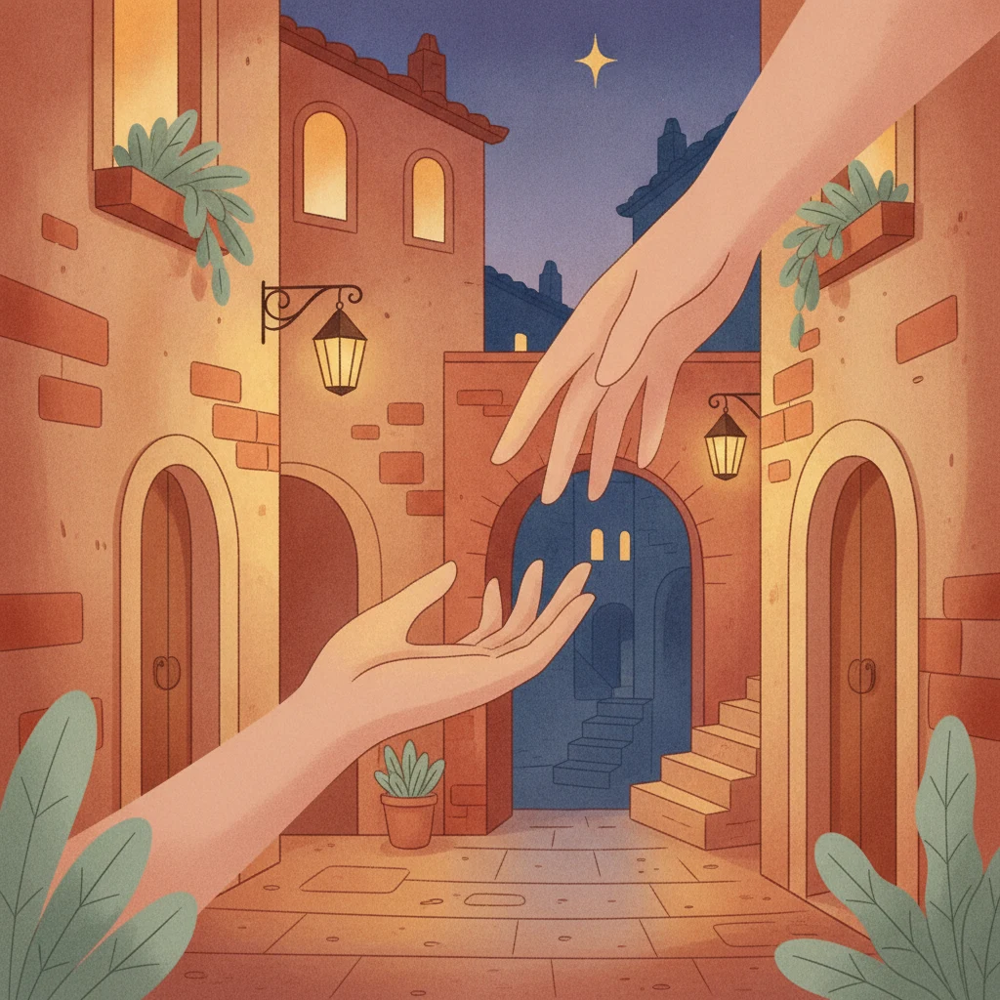
◎Ce que je vais apprendre
Découvrir la sourate Al-Balad (« La Cité »), 20 versets.
Comprendre ce qu'est « le chemin difficile » (al-'aqaba) dont parle Allah.
Relier cette sourate à un geste concret d'entraide.
« Non !... Je jure par cette Cité ! et toi, tu es un résident dans cette cité — Et par le père et ce qu'il engendre ! Nous avons, certes, créé l'homme pour une vie de lutte. Pense-t-il que personne ne pourra rien contre lui ? Il dit : "J'ai gaspillé beaucoup de biens." Pense-t-il que nul ne l'a vu ? Ne lui avons-Nous pas assigné deux yeux, et une langue et deux lèvres ? Ne l'avons-Nous pas guidé aux deux voies ? Or, il ne s'engage pas dans la voie difficile ! Et qui te dira ce qu'est la voie difficile ? C'est délier un joug [affranchir un esclave], ou nourrir, en un jour de famine, un orphelin proche parent, ou un pauvre dans le dénouement. Et c'est être, en outre, de ceux qui croient et s'enjoignent mutuellement l'endurance, et s'enjoignent mutuellement la miséricorde. Ceux-là sont les gens de la droite ; alors que ceux qui ne croient pas en Nos versets sont les gens de la gauche. Le Feu se refermera sur eux. »
Sourate Al-Balad (90), versets 1 à 20 — trad. M. Hamidullah
Allah jure par la Cité (La Mecque) et rappelle qu'Il a créé l'être humain « dans la lutte » (kabad) : la vie comporte des efforts et des épreuves pour tout le monde, riche ou pauvre. Certains oublient que tout ce qu'ils possèdent — jusqu'à leurs yeux, leur langue, leurs lèvres — est un don d'Allah, et pensent pouvoir agir comme bon leur semble sans être vus ni jugés.
Puis Allah pose une question : est-ce que cette personne s'est engagée dans « le chemin difficile » ? Ce chemin, ce n'est pas une montagne à escalader : c'est un effort du cœur, celui de donner quelque chose qui coûte — libérer une personne de l'esclavage, ou nourrir un orphelin ou un pauvre au moment où on en a le plus besoin. La sourate ajoute qu'il faut aussi s'encourager les uns les autres à la patience et à la miséricorde : la foi ne se vit jamais seul.
✦3 idées essentielles
1
Allah m'a donné des yeux, une langue, des lèvres, et m'a montré les deux chemins (le bien et le mal) : ce sont des bienfaits énormes que j'oublie souvent de remarquer.
2
Le vrai courage dans la foi, c'est de choisir le chemin qui coûte un effort : aider quelqu'un dans le besoin plutôt que de regarder ailleurs.
3
Je ne dois pas seulement bien agir moi-même : je dois aussi encourager mes proches à la patience et à la bonté, comme le dit la sourate.
✏Je m'exerce
1. Que veut dire « al-'aqaba », le chemin difficile ?
Réponse : Un effort du cœur qui coûte quelque chose, comme aider un orphelin ou un pauvre, plutôt qu'un effort physique.
2. Cite deux bienfaits qu'Allah nous rappelle dans cette sourate.
Réponse : Les yeux, la langue, les lèvres, et le fait d'avoir été guidés vers les deux chemins (bien/mal) — plusieurs réponses possibles.
3. Que doit-on faire en plus de bien agir, selon le verset 17 ?
Réponse : S'encourager mutuellement à la patience et à la miséricorde.
★À retenir
« Le vrai chemin, c'est celui qui me coûte un effort pour aider les autres — et je ne le porte pas seul(e). »
✎Vocabulaire
Al-'Aqaba : le chemin difficile, l'effort qui coûte.الْعَقَبَة
Kabad : la lutte, l'effort de la vie humaine.كَبَد
Marhama : la miséricorde envers les autres.مَرْحَمَة
🏠 Ancrage quotidien — à la maison
Cette semaine, aide un membre de ta famille sans qu'on ait besoin de te le demander deux fois — porter des courses, mettre la table, aider un petit frère ou une petite sœur. C'est un petit exemple du « chemin difficile » de la sourate.
Semaine 2 · Aqîda🕌 Croyance
Ar-Rabb — mon Créateur et mon Maîtreالرَّبّ
◎Ce que je vais apprendre
Découvrir le Tawhîd ar-Rubûbiyya : croire qu'Allah seul crée, possède et gouverne tout ce qui existe.
Comprendre que cette croyance, à elle seule, ne suffit pas encore à être pleinement musulman (on le verra en S7).
Apprendre à me reposer sur Allah dans les moments où je me sens petit(e) face à un problème.
✎L'histoire d'Ahmed
Ahmed regarde un documentaire sur l'espace avec son père : des milliards d'étoiles, des galaxies immenses, une Terre minuscule au milieu de tout cela. « Papa, qui a fait tout ça ? » Son père sourit. « C'est une excellente question, Ahmed. Tout ce que tu vois — les étoiles, la Terre, toi-même, moi — a un seul Créateur : Allah. On L'appelle Ar-Rabb, le Maître qui crée, qui possède et qui gère absolument tout, du plus grand astre au plus petit insecte. »
« Mais alors, dit Ahmed, même les gens qui ne prient pas, ils savent que c'est Allah qui a tout créé ? » « La plupart du temps, oui, répond son père. Presque tout le monde reconnaît qu'il existe un Créateur derrière l'univers, même sans le nommer précisément. Mais croire qu'Allah a tout créé n'est qu'une première étape. On en reparlera bientôt : savoir qui a tout créé, c'est une chose. Adorer uniquement Celui qui a tout créé, c'en est une autre. »
Allâhu khâliqu kulli shay'in wa huwa 'alâ kulli shay'in wakîl.
« Allah est le Créateur de toute chose, et de toute chose Il est Garant. »
Sourate Az-Zumar (39), verset 62 — trad. M. Hamidullah
💬Qu'est-ce que cela veut dire ?
D'après le tafsîr d'As-Sa'dî, ce verset signifie qu'absolument tout ce qui existe — sauf Allah Lui-même — est créé par Lui : rien ne s'est fait tout seul, rien n'existait avant Lui. Être « Garant » (wakîl) de toute chose veut dire qu'Allah connaît parfaitement tout ce qu'Il a créé, qu'Il a le pouvoir complet de le gérer, et qu'Il le fait avec une sagesse parfaite.
C'est ce qu'on appelle le Tawhîd ar-Rubûbiyya : croire qu'Allah seul est le Rabb (Créateur, Maître, Pourvoyeur) de tout l'univers. Presque tous les êtres humains, même ceux qui ne pratiquent aucune religion, reconnaissent qu'il existe un Créateur. Mais comme l'explique la suite du programme de cette année (voir S7), reconnaître qui a tout créé ne suffit pas encore : il faut aussi n'adorer que Lui.
🤲Un hadith pour la vie de tous les jours
احفظ الله يحفظك، احفظ الله تجده تجاهك، إذا سألت فاسأل الله، وإذا استعنت فاستعن بالله
« Préserve les commandements d'Allah, Il te préservera. Préserve Ses droits, tu Le trouveras toujours avec toi. Si tu demandes, demande à Allah ; et si tu cherches du secours, cherche-le auprès d'Allah. »
Ibn 'Abbâs — Riyad as-Salihin, n°1279 (rapporté par At-Tirmidhî) — source
✦Et toi ?
La prochaine fois qu'un problème te semble trop grand pour toi (un contrôle difficile, une dispute), rappelle-toi que le Créateur de l'univers entier est aussi Celui à qui tu peux demander de l'aide directement.
✏Je m'exerce
1. Que signifie le Tawhîd ar-Rubûbiyya ?
Réponse : Croire qu'Allah seul est le Créateur, le Maître et le Gérant de tout l'univers.
2. Est-ce que croire qu'Allah a tout créé suffit à être pleinement musulman ?
Réponse : Non — il faut aussi n'adorer que Lui seul (voir S7).
3. D'après le hadith, à qui dois-je demander de l'aide en premier ?
Réponse : À Allah.
★À retenir
« Allah, Ar-Rabb, a créé et gère tout l'univers — je peux Lui faire confiance et Lui demander de l'aide directement. »
✎Vocabulaire
Ar-Rabb : le Maître, le Créateur, Celui qui gère tout.الرَّبّ
Rubûbiyya : la croyance qu'Allah seul crée et gère l'univers.رُبُوبِيَّة
Wakîl : le Garant, Celui qui gère avec pouvoir et sagesse.وَكِيل
🚌 Ancrage quotidien — rue & transports
La prochaine fois que tu attends le bus ou que tu marches dans la rue, prends 10 secondes pour observer ce qui t'entoure (arbres, ciel, gens) et rappelle-toi que tout cela a un seul Créateur, Ar-Rabb — puis dis simplement « Al-hamdu lillâh ».
Semaine 3 · Fiqh💧 La pratique
Pourquoi et comment prier en groupeصَلَاةُ الْجَمَاعَة
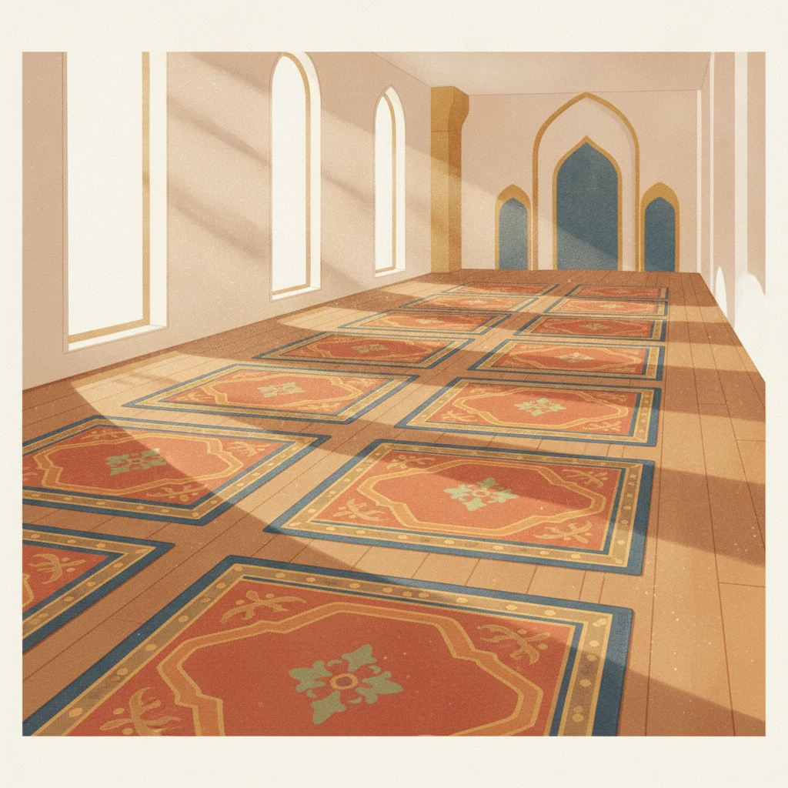
◎Ce que je vais apprendre
Comprendre pourquoi la prière en groupe (jamâ'a) est tellement encouragée.
Savoir comment se ranger correctement dans les rangs (saff).
Découvrir ce qu'on fait si on arrive en retard à la prière en groupe.
✎L'histoire d'Ahmed
Depuis cette année, Ahmed accompagne parfois son grand frère à la mosquée du quartier pour la prière du vendredi. La première fois, il ne savait pas où se mettre : trop près, trop loin, un espace vide au milieu du rang ? Un homme âgé lui a montré gentiment comment se serrer épaule contre épaule, sans laisser de trou dans la ligne. « Un rang bien serré, c'est plus solide, comme une chaîne, » lui a-t-il expliqué en souriant.
💬Pourquoi prier en groupe ?
Prier seul(e) est valable, mais prier en groupe (en jamâ'a) est bien plus encouragé en Islam : cela rassemble les musulmans, apprend l'humilité (on suit le même mouvement que son voisin, riche ou pauvre), et la récompense en est multipliée. Voici comment se ranger simplement : on se place derrière l'imam (celui qui dirige la prière), on complète d'abord les rangs de devant sans laisser de trous, et on se tient épaule contre épaule.
Si tu arrives après le début de la prière, tu rejoins discrètement le rang, tu suis l'imam depuis le moment où tu arrives, et tu rattraperas ensuite chez toi (ou après le salâm final) les rak'a que tu as manquées — sans jamais courir ni bousculer les autres pour arriver à temps.
« La prière en groupe est vingt-sept fois supérieure à la prière accomplie seul. »
Rapporté par 'Abdullah ibn 'Umar — Sahih al-Bukhari, n°630 — source
✦Le savais-tu ?
Si tu arrives pendant que l'imam est encore en train de faire la première rak'a, tu peux entrer directement dans la prière avec le groupe — pas besoin d'attendre le début exact.
✏Je m'exerce
1. Combien de fois la prière en groupe est-elle supérieure à la prière seul(e), d'après le hadith ?
Réponse : Vingt-sept fois.
2. Comment doit-on se ranger dans les rangs ?
Réponse : Épaule contre épaule, sans laisser de trous, en complétant d'abord les rangs de devant.
3. Que fait-on si on arrive en retard ?
Réponse : On rejoint discrètement le rang, on suit l'imam, et on rattrape ensuite les rak'a manquées.
★À retenir
« Prier ensemble, épaule contre épaule, rend le rang plus solide — comme une chaîne. »
✎Vocabulaire
Jamâ'a : la prière accomplie en groupe.جَمَاعَة
Saff : le rang de la prière.صَفّ
Imam : celui qui dirige la prière.إِمَام
🏫 Ancrage quotidien — avec les enseignants
Comme dans un rang de prière où chacun suit le même mouvement sans désordre, en classe aussi : écoute la consigne de ton enseignant du début à la fin avant d'agir, sans te précipiter ni couper la parole.
Semaine 4 · Sîra🕋 L'histoire du Prophète ﷺ
Badr (1) — l'attente et la prière du Prophète ﷺبَدْر
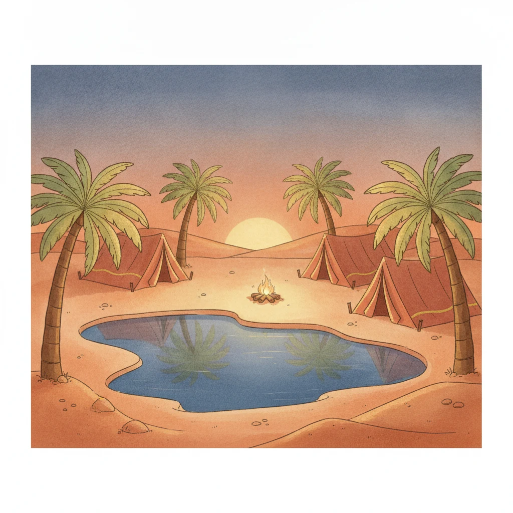
◎Ce que je vais apprendre
Comprendre le contexte de la bataille de Badr, en l'an 2 de l'Hégire.
Découvrir comment le Prophète ﷺ a passé la nuit avant la bataille.
Comprendre que la foi ne dispense jamais de la préparation sérieuse.
✎Le contexte
Deux ans après l'Hégire (le départ de La Mecque vers Médine), le Prophète ﷺ apprend qu'une caravane commerçante des Mecquois, dirigée par Abû Sufyân, revient de Syrie. Les musulmans, encore peu nombreux et affaiblis par des années de persécution, partent à sa rencontre — pas pour un affrontement, au départ, mais pour répondre à des années d'injustice. La caravane leur échappe finalement, mais les Mecquois, avertis, envoient une armée nombreuse pour protéger leurs intérêts et écraser les musulmans une bonne fois pour toutes.
Les musulmans, environ 313 hommes très peu équipés, se retrouvent donc face à une armée mecquoise d'environ 1000 combattants, bien armés. Le lieu de la rencontre : les puits de Badr.
💬La nuit avant la bataille
Avant l'affrontement, le Prophète ﷺ a d'abord fait preuve d'une stratégie réfléchie : sur le conseil d'un compagnon, il fait déplacer le campement musulman près du point d'eau le plus proche de l'ennemi, pour que les musulmans aient accès à l'eau et que les Mecquois en soient privés. Ce n'est qu'après cette préparation concrète que le Prophète ﷺ passe une grande partie de la nuit en prière et en invocation, demandant à Allah le secours face à une armée bien plus nombreuse et mieux équipée.
Cette nuit-là enseigne une leçon essentielle : la foi en Allah ne remplace jamais la préparation sérieuse — elle vient en plus. Le Prophète ﷺ a organisé l'armée, choisi le meilleur emplacement, ET invoqué Allah avec insistance. Les deux vont toujours ensemble.
✦3 idées essentielles
1
Se préparer sérieusement (étudier avant un contrôle, s'entraîner avant un match) n'est pas un manque de confiance en Allah — c'est ce que le Prophète ﷺ a fait lui-même.
2
Même bien préparé, on garde besoin d'invoquer Allah : la préparation humaine et la confiance en Allah avancent ensemble, jamais l'une sans l'autre.
3
Face à une situation qui semble injuste depuis longtemps, les musulmans de Badr ont choisi de rester organisés plutôt que de céder à la panique.
✏Je m'exerce
1. Combien y avait-il de musulmans face aux Mecquois à Badr, environ ?
Réponse : Environ 313 musulmans face à environ 1000 Mecquois.
2. Pourquoi le campement a-t-il été déplacé près du point d'eau ?
Réponse : Pour que les musulmans aient accès à l'eau et que l'ennemi en soit privé — une décision stratégique.
3. Que nous enseigne la nuit passée en prière par le Prophète ﷺ ?
Réponse : Que la préparation sérieuse et la confiance en Allah vont toujours ensemble.
★À retenir
« Se préparer sérieusement et invoquer Allah : les deux vont toujours ensemble, jamais l'un sans l'autre. »
✎Vocabulaire
Badr : le lieu des puits où eut lieu la bataille.بَدْر
Hégire : le départ de La Mecque vers Médine.هِجْرَة
🏠 Ancrage quotidien — à la maison
Avant un contrôle ou un événement important, prépare-toi sérieusement ET fais une petite invocation avant de dormir — comme le Prophète ﷺ à Badr, les deux ensemble.
Semaine 5 · Adab🤝 Bienséance
Qui suis-je ? Identité et appartenanceالْهُوِيَّة
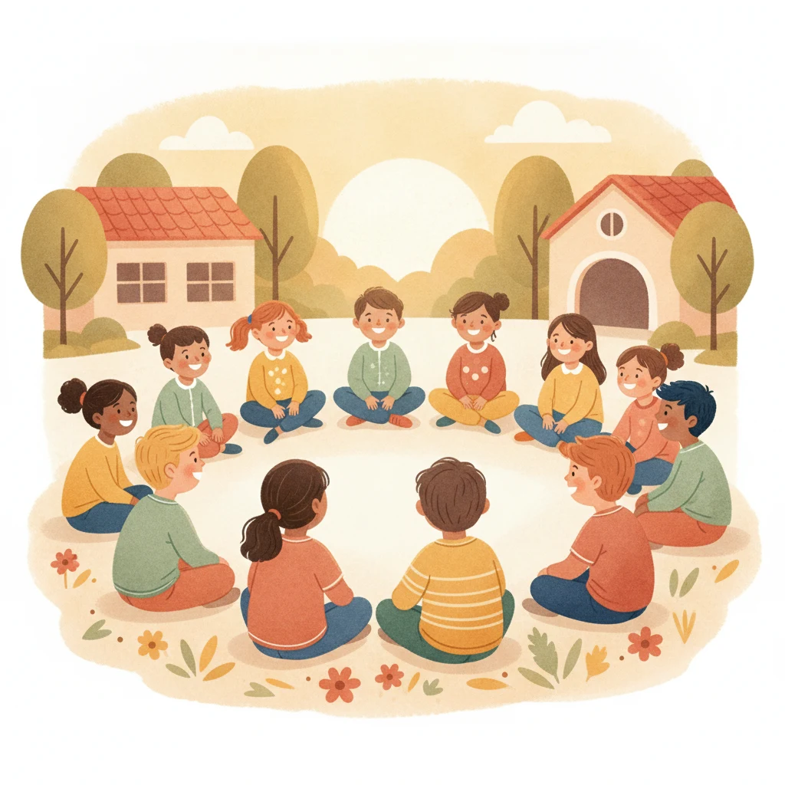
◎Ce que je vais apprendre
Réfléchir à ce qui construit mon identité (famille, foi, amis, goûts).
Comprendre que grandir, c'est parfois se sentir « entre deux mondes » — et que c'est normal.
Découvrir un hadith qui parle de l'importance de bien choisir ses amis.
✎L'histoire d'Ahmed
En CM2, Ahmed remarque que certains camarades commencent à former des petits groupes fermés, où il faut aimer les mêmes choses pour être accepté. Un jour, un camarade lui dit : « Tu es bizarre, tu ne regardes même pas telle série et tu ne dis jamais de gros mots. » Ahmed rentre chez lui un peu troublé et en parle à sa mère. Elle lui répond : « Ahmed, ton identité, ce n'est pas seulement ce que les autres attendent de toi. C'est ta famille, ta foi, tes valeurs, mais aussi tes goûts à toi, tes qualités, ce qui te rend unique. Tu n'as pas à choisir entre "être toi-même" et "avoir des amis" : les vrais amis acceptent qui tu es vraiment. »
💬Grandir, c'est se poser des questions
À 10-11 ans, il est tout à fait normal de commencer à se demander « qui suis-je vraiment ? », de comparer sa famille à celle des autres, ou de se sentir parfois différent(e). C'est une étape importante de la croissance, pas un problème à résoudre en urgence. Ton identité repose sur plusieurs piliers solides : ta famille, ta foi, tes valeurs personnelles, tes qualités, et aussi les amitiés que tu choisis de construire.
Justement, le choix des amis compte énormément à cet âge, car on est influencé, sans toujours s'en rendre compte, par les personnes qu'on fréquente le plus.
« Chacun suit la religion (les habitudes) de son ami proche ; regardez donc bien qui vous prenez pour ami. »
Abû Hurayra — Riyad as-Salihin, n°1584 (rapporté par Abû Dâwûd et At-Tirmidhî) — source
✦Et toi ?
Fais la liste (dans ta tête ou sur un papier) de 3 personnes que tu fréquentes le plus. Demande-toi : est-ce qu'elles m'encouragent à être une meilleure version de moi-même ?
2. D'après le hadith, pourquoi faut-il bien choisir ses amis ?
Réponse : Parce qu'on est influencé par les habitudes de ceux qu'on fréquente le plus.
3. Est-ce grave de se sentir "différent" parfois à cet âge ?
Réponse : Non, c'est normal — cela fait partie de grandir.
★À retenir
« Mon identité, c'est ma famille, ma foi, mes valeurs et mes qualités — pas seulement ce que les autres attendent de moi. »
✎Vocabulaire
Khalîl : l'ami proche.خَلِيل
Identité : ce qui fait de moi qui je suis.هُوِيَّة
🏫 Ancrage quotidien — cour d'école
Si un camarade essaie de te faire dire ou faire quelque chose qui ne te ressemble pas pour « faire comme tout le monde », entraîne-toi à répondre calmement « non merci, ce n'est pas pour moi » — sans te justifier davantage.
Semaine 6 · Coran📗 Le Coran
Le soleil et l'âme purifiéeالشَّمْس
◎Ce que je vais apprendre
Découvrir la sourate Ash-Shams (« Le Soleil »), 15 versets.
Comprendre ce que signifie « purifier son âme » (tazkiyat an-nafs).
Connaître l'histoire du peuple de Thamûd et de la chamelle.
« Par le soleil et par sa clarté ! Et par la lune quand elle le suit ! Et par le jour quand il l'éclaire ! Et par la nuit quand elle l'enveloppe ! Et par le ciel et Celui qui l'a construit ! Et par la terre et Celui qui l'a étendue ! Et par l'âme et Celui qui l'a harmonieusement façonnée ; et lui a alors inspiré son immoralité, de même que sa piété ! A réussi, certes celui qui la purifie. Et est perdu, certes, celui qui la corrompt. Les Thamûd, par leur transgression, ont crié au mensonge, lorsque le plus misérable d'entre eux se leva (pour tuer la chamelle). Le Messager d'Allah leur avait dit : "La chamelle d'Allah ! Laissez-la boire." Mais, ils le traitèrent de menteur, et la tuèrent. Leur Seigneur les détruisit donc, pour leur péché et étendit Son châtiment sur tous. Et Allah n'a aucune crainte des conséquences. »
Sourate Ash-Shams (91), versets 1 à 15 — trad. M. Hamidullah
Allah jure par le soleil, la lune, le jour, la nuit, le ciel, la terre — et par l'âme humaine elle-même. Il rappelle qu'Il a créé chaque âme avec en elle la capacité de reconnaître le mal (fujûr) et le bien (taqwâ) : personne ne naît sans repère. Réussit celui qui purifie son âme (zakkâhâ), échoue celui qui l'enfouit sous les mauvaises habitudes (dassâhâ).
La sourate raconte ensuite l'histoire du peuple de Thamûd : Allah leur avait envoyé une chamelle comme signe, avec l'ordre de la laisser boire sans lui faire de mal. Le plus égaré d'entre eux l'a tuée par défi — et le châtiment d'Allah s'est abattu sur tout le peuple à cause de ce péché collectif, car ils avaient tous accepté ce crime.
✦3 idées essentielles
1
Allah a mis en moi, dès la naissance, la capacité de distinguer le bien du mal — je n'ai pas besoin d'inventer ma propre morale.
2
Réussir dans la vie, au sens le plus important, c'est purifier son âme jour après jour, pas seulement réussir à l'école ou dans le sport.
3
Accepter en silence une injustice qu'on voit commettre (comme Thamûd face à la chamelle) peut rendre tout un groupe responsable, pas seulement celui qui agit.
✏Je m'exerce
1. Que veut dire « zakkâhâ » (celui qui la purifie) ?
Réponse : Purifier son âme des péchés et la faire grandir par de bonnes actions.
2. Quel signe Allah a-t-Il envoyé au peuple de Thamûd ?
Réponse : Une chamelle qu'il ne fallait pas maltraiter.
3. Pourquoi tout le peuple a-t-il été puni, alors qu'un seul homme a tué la chamelle ?
Réponse : Parce qu'ils ont accepté et soutenu cet acte collectivement.
★À retenir
« Réussir vraiment, c'est purifier mon âme chaque jour, pas seulement accumuler des réussites extérieures. »
✎Vocabulaire
Tazkiya : la purification de l'âme.تَزْكِيَة
Fujûr : l'immoralité, le mal.فُجُور
Thamûd : peuple ancien auquel Allah envoya le prophète Sâlih.ثَمُود
🏠 Ancrage quotidien — à la maison
Ce soir, avant de dormir, repense à une seule chose que tu as faite dans la journée pour « purifier » un peu ton comportement (une parole retenue, une aide apportée) — pas besoin d'en parler à voix haute, juste y penser.
Semaine 7 · Aqîda🕌 Croyance
Allah seul mérite l'adorationالْأُلُوهِيَّة
◎Ce que je vais apprendre
Découvrir le Tawhîd al-Ulûhiyya : n'adorer qu'Allah seul.
Comprendre la différence avec le Tawhîd ar-Rubûbiyya vu en S2.
Réfléchir à ce que veut vraiment dire « adorer ».
✎L'histoire d'Ahmed
Ahmed se souvient de la leçon sur Ar-Rabb (S2) : Allah a tout créé. « Mais alors, demande-t-il à sa mère, pourquoi est-ce qu'on prie seulement Allah, si presque tout le monde reconnaît qu'Il est le Créateur ? » Sa mère lui répond : « C'est exactement la bonne question, Ahmed. Reconnaître qu'Allah a tout créé (Rubûbiyya), c'est une chose. Mais Lui seul adresser toute mon adoration — ma prière, mes invocations, ma confiance totale — c'en est une autre : on appelle cela le Tawhîd al-Ulûhiyya. Beaucoup de peuples anciens reconnaissaient un Dieu créateur, mais adoraient quand même des idoles à côté de Lui, en pensant qu'elles pouvaient les rapprocher de Lui. C'est justement cette erreur que l'Islam corrige. »
« Je n'ai créé les djinns et les hommes que pour qu'ils M'adorent. »
Sourate Adh-Dhâriyât (51), verset 56 — trad. M. Hamidullah
💬Qu'est-ce que cela veut dire ?
D'après le tafsîr d'As-Sa'dî, ce verset indique le véritable but pour lequel Allah a créé les djinns et les êtres humains : L'adorer, ce qui implique de Le connaître, de L'aimer, de se tourner vers Lui et de se détourner de tout ce qui n'est pas Lui. Adorer ne se limite pas à la prière rituelle : cela englobe toute forme de dévotion, d'espoir, de peur ou de confiance totale placée en un être.
C'est pour cela qu'un musulman ne dirige aucune de ces formes d'adoration vers un autre qu'Allah — ni statue, ni astre, ni personne, aussi vénérée soit-elle. Croire qu'Allah a tout créé (Rubûbiyya) sans Lui vouer une adoration exclusive (Ulûhiyya) ne suffit pas : c'était justement l'erreur de nombreux peuples anciens.
🤲Ce que dit le Prophète ﷺ
Le Prophète ﷺ demanda à Mu'âdh : « Sais-tu quel est le droit d'Allah sur Ses serviteurs, et le droit des serviteurs sur Allah ? » Mu'âdh répondit : « Allah et Son Messager savent mieux. » Il dit : « Le droit d'Allah sur Ses serviteurs est qu'ils L'adorent sans rien Lui associer ; et le droit des serviteurs sur Allah est qu'Il ne punisse pas celui qui ne Lui associe rien. »
1. Quelle est la différence entre Rubûbiyya et Ulûhiyya ?
Réponse : Rubûbiyya = croire qu'Allah a tout créé ; Ulûhiyya = n'adorer qu'Allah seul.
2. D'après le verset 51:56, pourquoi Allah a-t-Il créé les djinns et les hommes ?
Réponse : Pour qu'ils L'adorent.
3. Quelle était l'erreur de nombreux peuples anciens ?
Réponse : Reconnaître Allah comme Créateur tout en adorant aussi des idoles à côté de Lui.
★À retenir
« Le droit d'Allah sur moi, c'est que je L'adore Lui seul, sans rien Lui associer. »
✎Vocabulaire
Ulûhiyya : n'adorer qu'Allah seul.أُلُوهِيَّة
'Ibâda : l'adoration, sous toutes ses formes.عِبَادَة
Shirk : associer un autre à Allah dans l'adoration.شِرْك
🚌 Ancrage quotidien — rue & transports
Quand tu passes devant un lieu où beaucoup de gens attendent quelque chose avec espoir (une file d'attente, une boutique), rappelle-toi : la vraie confiance totale, celle qui ne déçoit jamais, ne se place qu'en Allah.
Semaine 8 · Fiqh💧 La pratique
Suivre l'imam, du premier au dernier gesteاِئْتِمَام
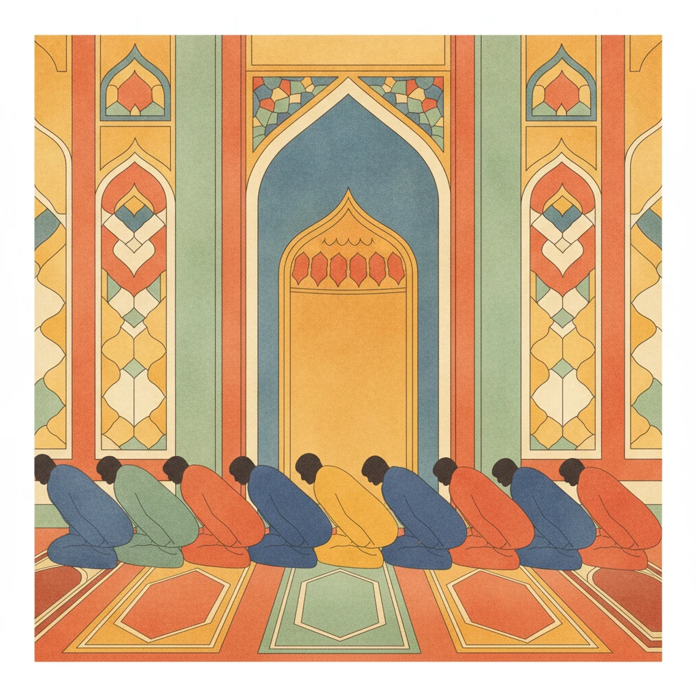
◎Ce que je vais apprendre
Comprendre pourquoi on ne doit jamais devancer l'imam dans les mouvements de la prière.
Connaître l'ordre exact à suivre : takbîr, inclinaison, redressement, prosternation.
Comprendre ce que veut dire « l'imam est nommé pour être suivi ».
✎L'histoire d'Ahmed
À la mosquée, Ahmed a remarqué qu'un jeune garçon se relevait de l'inclinaison (rukû') un peu avant l'imam, pressé d'aller plus vite. Après la prière, l'imam lui a rappelé gentiment : « On ne devance jamais l'imam, même d'une seconde — on le suit, on ne le précède pas, et on ne bouge pas non plus exactement en même temps que lui : on attend qu'il commence, puis on le suit. »
💬Qu'est-ce que cela veut dire ?
L'imam est désigné précisément pour être suivi : quand il dit « Allâhu akbar », on dit « Allâhu akbar » ; quand il s'incline (rukû'), on s'incline ; quand il dit « sami' Allâhu liman hamidah », on répond « Rabbanâ wa lakal-hamd » ; quand il se prosterne, on se prosterne. L'ordre est toujours le même : l'imam commence son geste, et c'est seulement après qu'on le suit — jamais avant, jamais exactement en même temps.
Cette règle simple enseigne une discipline importante : dans un groupe, il y a un moment pour l'initiative et un moment pour suivre calmement, sans se précipiter pour être « le premier ».
🤲Ce que dit le Prophète ﷺ
إِنَّمَا جُعِلَ الإِمَامُ لِيُؤْتَمَّ بِهِ
« L'imam n'est nommé que pour être suivi. Aussi, quand il prononce le takbîr, prononcez-le ; quand il s'incline, inclinez-vous. »
Réponse : Non, jamais — on suit toujours après lui.
2. Que répond-on quand l'imam dit « sami' Allâhu liman hamidah » ?
Réponse : « Rabbanâ wa lakal-hamd ».
3. Pourquoi l'imam est-il nommé, d'après le hadith ?
Réponse : Pour être suivi par les fidèles.
★À retenir
« On suit l'imam, on ne le devance jamais — la discipline du groupe passe avant l'envie d'aller vite. »
✎Vocabulaire
I'timâm : le fait de suivre l'imam.اِئْتِمَام
Rukû' : l'inclinaison dans la prière.رُكُوع
🏫 Ancrage quotidien — avec les enseignants
En classe, attends que ton enseignant ait fini sa consigne avant de commencer un exercice, même si tu penses déjà savoir quoi faire — comme on attend l'imam avant de bouger.
Semaine 9 · Sîra🕋 L'histoire du Prophète ﷺ
Badr (2) — la bataille et la leçon du petit nombreبَدْر
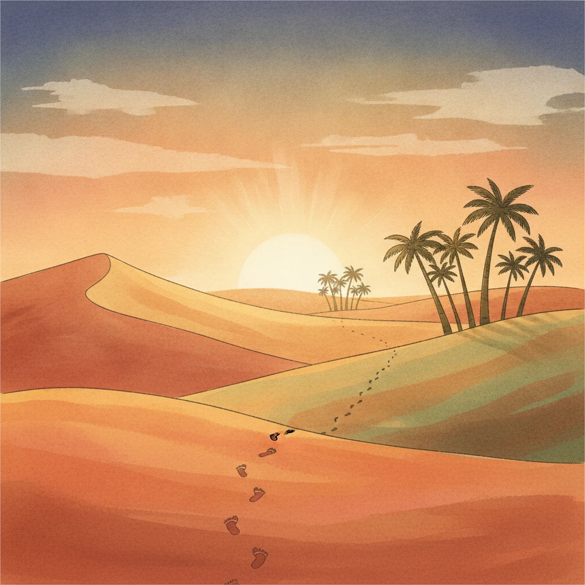
◎Ce que je vais apprendre
Découvrir l'issue de la bataille de Badr, en l'an 2 de l'Hégire.
Comprendre pourquoi Badr est appelée « le jour du Discernement » (Yawm al-Furqân).
Retenir la leçon principale : la victoire ne dépend pas du nombre.
✎Le récit
Le lendemain de la nuit de prière (voir S4), les 313 musulmans font face à l'armée mecquoise, bien plus nombreuse et mieux équipée. Contre toute attente, la petite armée musulmane remporte une victoire décisive. Les récits de la Sîra rapportent que les musulmans ont ressenti, ce jour-là, un secours qui dépassait largement leurs propres forces et leur préparation — un rappel que la victoire, en définitive, appartient à Allah, et non simplement au nombre de combattants ou à la puissance des armes.
Cette bataille est appelée dans le Coran Yawm al-Furqân, « le jour du Discernement » : le jour où la vérité s'est clairement distinguée de l'erreur, où la petite communauté musulmane a compris qu'elle pouvait tenir face à l'adversité si elle restait unie et confiante.
✦3 idées essentielles
1
Être en petit nombre ou avoir moins de moyens que les autres n'empêche pas de réussir, si on reste organisé, préparé et confiant en Allah.
2
Badr est appelée « le jour du Discernement » : un moment où le bon chemin est devenu clair pour la jeune communauté musulmane.
3
La victoire de Badr a renforcé la conviction que la préparation sérieuse, jointe à la confiance en Allah (vue en S4), porte ses fruits.
✏Je m'exerce
1. Qui a remporté la bataille de Badr ?
Réponse : Les musulmans, malgré leur petit nombre face à l'armée mecquoise.
2. Comment appelle-t-on aussi la bataille de Badr dans le Coran ?
Réponse : Yawm al-Furqân, « le jour du Discernement ».
3. Quelle leçon peut-on tirer de Badr quand on se sent en minorité (à l'école, dans un groupe) ?
Réponse : Le nombre ne fait pas tout — rester organisé et confiant compte davantage.
★À retenir
« À Badr, la victoire n'a pas dépendu du nombre — être peu nombreux n'empêche pas de tenir bon. »
✎Vocabulaire
Yawm al-Furqân : « le jour du Discernement », autre nom de Badr.يَوْم الْفُرْقَان
🏫 Ancrage quotidien — cour d'école
Si tu te retrouves en minorité dans une discussion ou un jeu (le seul à penser une chose), rappelle-toi que le nombre n'a pas empêché les musulmans de Badr de tenir bon — reste calme et fidèle à ce que tu penses juste.
Semaine 10 · Adab🤝 Bienséance
Résister à la pression du groupeضَغْط الْمَجْمُوعَة
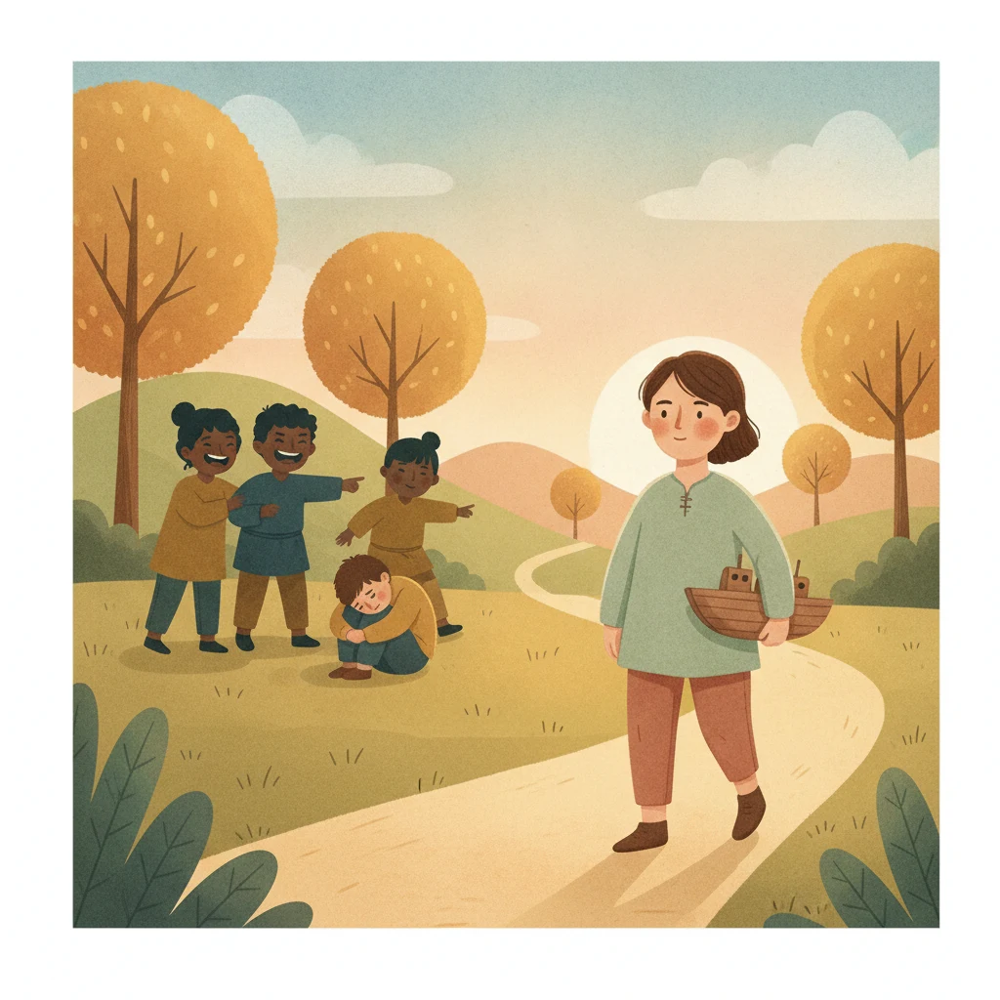
◎Ce que je vais apprendre
Reconnaître ce qu'est la pression du groupe (vouloir faire comme tout le monde).
Apprendre des phrases simples pour dire non sans conflit.
Comprendre le lien avec le hadith de l'ami vu en S5.
✎L'histoire d'Ahmed
Un groupe de camarades décide de se moquer d'un élève plus timide en imitant sa façon de parler. Tout le monde rit, et l'un d'eux se tourne vers Ahmed : « Vas-y, toi aussi, imite-le ! » Ahmed sent son cœur battre plus vite — il ne veut ni se moquer, ni se faire rejeter par le groupe. Il se souvient alors de la leçon de la semaine 5 : ses vrais amis n'ont pas besoin qu'il fasse du mal aux autres pour l'accepter. Il répond simplement : « Non, ça ne me fait pas rire », et il s'éloigne pour aller parler à l'élève moqué.
💬Reconnaître la pression du groupe
La pression du groupe, c'est cette envie forte de faire ou dire quelque chose uniquement parce que les autres le font, même si au fond de toi, tu sais que ce n'est pas bien. Elle est plus forte à cet âge parce que l'avis des camarades commence à compter énormément. Voici quelques phrases simples à garder en tête pour dire non sans grand conflit : « Non merci, ce n'est pas pour moi » ; « Je préfère ne pas » ; « Vous pouvez continuer, moi je passe ». Pas besoin de faire un long discours ni de convaincre le groupe entier — une phrase courte et calme suffit.
✦Et toi ?
La prochaine fois qu'un groupe te pousse à faire quelque chose qui ne te ressemble pas, essaie une des phrases ci-dessus — à voix calme, sans crier ni te justifier longuement.
✏Je m'exerce
1. Qu'est-ce que la pression du groupe ?
Réponse : L'envie de faire comme les autres même quand on sait que ce n'est pas bien.
2. Cite une phrase simple pour dire non à un groupe.
Réponse : « Non merci, ce n'est pas pour moi » (ou une phrase équivalente).
3. Que fait Ahmed après avoir refusé de se moquer ?
Réponse : Il va parler à l'élève moqué.
★À retenir
« Une phrase courte et calme suffit pour dire non à un groupe — je n'ai pas besoin de me justifier longuement. »
✎Vocabulaire
Pression du groupe : l'envie de se conformer aux autres.
🏫 Ancrage quotidien — cour d'école
Entraîne-toi cette semaine à dire calmement « non merci, ce n'est pas pour moi » face à une petite pression du groupe — même pour une chose sans grande gravité, pour t'entraîner.
Semaine 11 · Coran📗 Le Coran
La nuit et les deux cheminsاللَّيْل
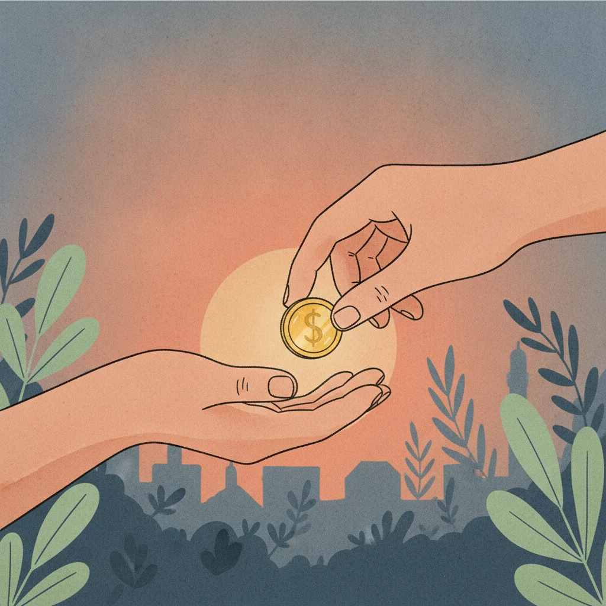
◎Ce que je vais apprendre
Découvrir la sourate Al-Layl (« La Nuit »), 21 versets.
Comprendre les deux chemins opposés que décrit la sourate.
Relier cette sourate à la générosité et à la sincérité.
« Par la nuit quand elle enveloppe tous ! Par le jour quand il éclaire ! Et par ce qu'Il a créé, mâle et femelle ! Vos efforts sont divergents. Celui qui donne et craint (Allah), et déclare véridique la plus belle récompense, Nous lui faciliterons la voie au plus grand bonheur. Et quand à celui qui est avare, se dispense (de l'adoration d'Allah), et traite de mensonge la plus belle récompense, Nous lui faciliterons la voie à la plus grande difficulté, et à rien ne lui serviront ses richesses quand il sera jeté (au Feu). C'est à Nous, certes, de guider ; à Nous appartient, certes, la vie dernière et la vie présente. Je vous ai donc avertis d'un Feu qui flambe, où ne brûlera que le damné, qui dément et tourne le dos ; alors qu'en sera écarté le pieux, qui donne ses biens pour se purifier, et auprès de qui personne ne profite d'un bienfait intéressé, mais seulement pour la recherche de La Face de son seigneur le Très-Haut. Et certes, il sera bientôt satisfait ! »
Sourate Al-Layl (92), versets 1 à 21 — trad. M. Hamidullah
Cette sourate décrit deux chemins totalement opposés. Le premier : celui qui donne, craint Allah, et croit en la plus belle récompense — Allah lui facilite le chemin vers l'aisance (al-yusrâ). Le second : celui qui est avare, se croit indépendant d'Allah, et rejette la récompense promise — Allah lui facilite le chemin vers la difficulté (al-'usrâ). Ses richesses ne lui serviront à rien face à ce choix.
Le point essentiel : le pieux donne « pour se purifier », c'est-à-dire sans rien attendre en retour de la personne aidée, uniquement pour rechercher la satisfaction d'Allah — pas pour se faire remarquer ou recevoir une faveur en échange.
✦3 idées essentielles
1
Mes efforts et mes choix ne mènent pas tous au même endroit : donner et craindre Allah facilite le chemin, l'avarice le complique.
2
La vraie générosité, selon cette sourate, ne cherche aucune faveur en retour de la personne aidée — seulement la satisfaction d'Allah.
3
Les richesses seules ne suffisent à rien si le cœur n'est pas tourné vers Allah avec sincérité.
✏Je m'exerce
1. Que se passe-t-il pour celui qui donne et craint Allah ?
Réponse : Allah lui facilite le chemin vers l'aisance (al-yusrâ).
2. Pourquoi le pieux donne-t-il ses biens, d'après le verset 20 ?
Réponse : Pour rechercher uniquement la satisfaction (« la Face ») d'Allah, sans attendre de retour.
3. Que dit la sourate sur les richesses de celui qui est avare ?
Réponse : Elles ne lui serviront à rien.
★À retenir
« Je donne pour la satisfaction d'Allah, jamais pour recevoir quelque chose en retour de la personne aidée. »
✎Vocabulaire
Al-Yusrâ : l'aisance, le chemin facilité.الْيُسْرَى
Al-'Usrâ : la difficulté, le chemin compliqué.الْعُسْرَى
🚌 Ancrage quotidien — rue & transports
Si tu vois une occasion de rendre un petit service à quelqu'un dans la rue ou les transports (tenir une porte, céder une place), fais-le sans attendre de remerciement particulier — juste pour la satisfaction d'Allah.
Semaine 12 · Aqîda🕌 Croyance
Le Jour Dernier (1) — la résurrection et le jugementالْيَوْم الْآخِر
◎Ce que je vais apprendre
Découvrir ce qu'est le Jour Dernier (al-Yawm al-Âkhir), l'un des 6 piliers de la foi.
Comprendre que chacun sera ressuscité et jugé sur ses actes.
Aborder ce sujet avec sérénité, pas avec peur.
✎L'histoire d'Ahmed
Après avoir vu un reportage sur des fouilles archéologiques très anciennes, Ahmed demande à son père : « Est-ce que tout ce qui existe finira par disparaître pour toujours ? » Son père réfléchit un instant. « Non, Ahmed. Tout ce monde tel qu'on le connaît prendra fin un jour — c'est ce qu'on appelle l'Heure. Mais ce n'est pas une fin définitive : Allah ressuscitera ensuite toutes les personnes qui ont vécu, pour qu'elles rendent compte de leurs actes. On appelle cela le Jour Dernier. Ce n'est pas un sujet à craindre en permanence, mais une vérité à connaître calmement, comme les autres piliers de la foi. »
Wa anna as-sâ'ata âtiyatun lâ rayba fîhâ wa anna Allâha yab'athu man fil-qubûr.
« Et que l'Heure arrivera, pas de doute à son sujet, et qu'Allah ressuscitera ceux qui sont dans les tombes. »
Sourate Al-Hajj (22), verset 7 — trad. M. Hamidullah
💬Qu'est-ce que cela veut dire ?
D'après le tafsîr d'As-Sa'dî, ce verset affirme deux vérités sans place au doute : l'Heure viendra, et Allah ressuscitera tous ceux qui sont morts pour les rétribuer selon leurs actes, bons ou mauvais. Croire au Jour Dernier fait partie des 6 piliers de la foi (comme le rappelle le célèbre hadith de l'ange Jibrîl, cité en Cycle 1 : croire en Allah, Ses anges, Ses livres, Ses messagers, le Jour Dernier, et le Qadar — que nous verrons en S22).
Cette croyance donne du sens à la vie présente : rien de ce que nous faisons n'est définitivement perdu ou oublié, tout compte pour ce jour-là.
✦Et toi ?
Le Jour Dernier n'est pas un sujet à craindre en permanence : c'est plutôt un rappel motivant que chaque petite bonne action compte, même celles que personne ne voit.
✏Je m'exerce
1. Que veut dire « al-Yawm al-Âkhir » ?
Réponse : Le Jour Dernier, jour de la résurrection et du jugement des actes.
2. D'après le verset 22:7, qu'est-ce qui arrivera sans aucun doute ?
Réponse : L'Heure, et la résurrection de tous ceux qui sont morts.
3. Pourquoi croire au Jour Dernier est-il motivant plutôt qu'effrayant ?
Réponse : Parce que chaque bonne action compte et n'est jamais oubliée.
★À retenir
« Rien de ce que je fais n'est perdu : tout compte pour le Jour Dernier, même ce que personne ne voit. »
✎Vocabulaire
Al-Yawm al-Âkhir : le Jour Dernier.الْيَوْم الْآخِر
As-Sâ'a : l'Heure, la fin du monde tel qu'on le connaît.السَّاعَة
🏠 Ancrage quotidien — à la maison
Ce soir, fais une petite bonne action à la maison sans que personne ne te voie ni ne te remercie (ranger discrètement quelque chose, par exemple) — en pensant que même cela compte pour le Jour Dernier.
Semaine 13 · Fiqh💧 La pratique
Le jeûne complet du Ramadânصِيَام
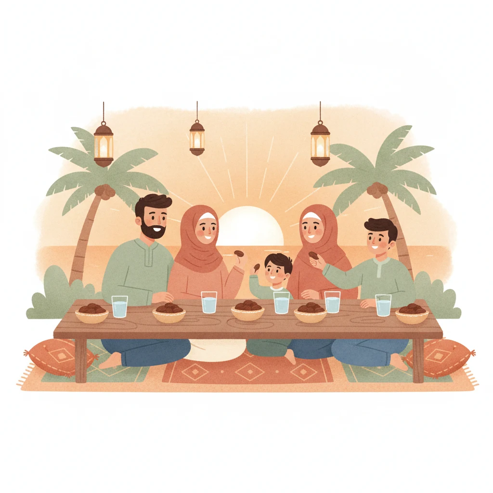
◎Ce que je vais apprendre
Être encouragé(e) et accompagné(e) pour jeûner le mois complet de Ramadân.
Comprendre que le jeûne est un secret entre moi et Allah.
Découvrir pourquoi la récompense du jeûne est différente des autres actes.
✎L'histoire d'Ahmed
Cette année, Ahmed a jeûné son premier Ramadân complet, avec l'accompagnement bienveillant de ses parents (qui ont adapté certains jours selon sa fatigue). Un midi, un camarade non-jeûneur lui propose discrètement un bonbon en lui disant : « Personne ne le saura. » Ahmed refuse gentiment. Le soir, il raconte cela à son père, qui lui sourit : « Tu viens de comprendre l'essentiel du jeûne, Ahmed : ce n'est pas une question de surveillance humaine. C'est un secret entre toi et Allah. »
💬Qu'est-ce que cela veut dire ?
Le jeûne du mois de Ramadân consiste à s'abstenir de nourriture, de boisson et d'autres choses permises normalement, du lever de l'aube (fajr) jusqu'au coucher du soleil (maghrib), avec une intention sincère (niyya). C'est un acte facilement caché : personne ne peut vraiment vérifier si quelqu'un jeûne ou non, ce qui en fait un acte de sincérité par excellence.
C'est pour cette raison qu'Allah réserve à ce seul acte une récompense particulière, comme le rappelle le hadith ci-dessous : contrairement aux autres bonnes actions, dont la récompense est multipliée par dix, le jeûne appartient directement à Allah, qui en fixe Lui-même la récompense.
🤲Ce que dit le Prophète ﷺ
Allah dit : « Toute action du fils d'Adam lui appartient, sauf le jeûne : il M'appartient et c'est Moi qui le récompense. » [...] « Celui qui jeûne connaît deux joies : quand il rompt son jeûne, il se réjouit ; et quand il rencontre son Seigneur, il se réjouit de son jeûne. »
Le hadith précise aussi que si quelqu'un cherche à te provoquer alors que tu jeûnes, la meilleure réponse est simplement de dire « je jeûne » — pas besoin de te disputer.
✏Je m'exerce
1. De quand à quand dure le jeûne dans la journée ?
Réponse : Du lever de l'aube (fajr) au coucher du soleil (maghrib).
2. Pourquoi la récompense du jeûne est-elle différente des autres actes ?
Réponse : Parce que le jeûne est facilement caché, donc particulièrement sincère — Allah seul en connaît la récompense exacte.
3. Que dire si quelqu'un te provoque pendant que tu jeûnes ?
Réponse : « Je jeûne » — sans se disputer.
★À retenir
« Le jeûne est un secret entre Allah et moi — je le respecte même quand personne ne me voit. »
✎Vocabulaire
Sawm / Siyâm : le jeûne.صِيَام
Niyya : l'intention sincère.نِيَّة
Fajr / Maghrib : l'aube / le coucher du soleil.فَجْر / مَغْرِب
🏠 Ancrage quotidien — à la maison
Pendant le Ramadân, propose d'aider à préparer la table du ftûr (rupture du jeûne) en famille, même les jours où c'est un peu fatigant.
Semaine 14 · Sîra🕋 L'histoire du Prophète ﷺ
Uhud — la leçon de la disciplineأُحُد
◎Ce que je vais apprendre
Découvrir la bataille d'Uhud, en l'an 3 de l'Hégire.
Comprendre la consigne donnée aux archers, et ce qui s'est passé quand elle n'a pas été respectée.
Retenir la leçon principale : la discipline collective compte plus que l'appât du gain immédiat.
✎Le récit
Un an après Badr, les Mecquois reviennent avec une armée plus importante pour prendre leur revanche, près du mont Uhud, non loin de Médine. Le Prophète ﷺ place un groupe d'archers sur une colline stratégique avec une consigne très claire : rester à leur poste, quoi qu'il arrive, tant qu'il ne leur en donnerait pas l'ordre — même si les musulmans semblaient prendre l'avantage.
Au début de la bataille, les musulmans prennent effectivement le dessus. Voyant l'ennemi reculer et croyant la victoire acquise, une partie des archers quitte leur poste pour rejoindre le butin abandonné par les Mecquois. Cette colline, laissée sans protection, est aussitôt exploitée par la cavalerie ennemie, qui contourne les musulmans par-derrière et retourne le cours de la bataille, causant de lourdes pertes, dont celle de nombreux compagnons.
✦3 idées essentielles
1
Une consigne claire donnée par un responsable doit être suivie jusqu'au bout, même quand la situation semble déjà gagnée.
2
Céder à la tentation immédiate (le butin) a fait perdre de vue l'objectif d'ensemble — une leçon valable bien au-delà d'une bataille.
3
Uhud enseigne l'humilité : même une communauté sincère peut connaître un revers quand la discipline fait défaut.
✏Je m'exerce
1. Quelle consigne le Prophète ﷺ a-t-il donnée aux archers ?
Réponse : Rester à leur poste sur la colline, quoi qu'il arrive, sans ordre contraire.
2. Pourquoi une partie des archers a-t-elle quitté son poste ?
Réponse : En pensant la victoire acquise, pour rejoindre le butin abandonné.
3. Quelle est la leçon principale d'Uhud ?
Réponse : La discipline collective et le respect des consignes comptent plus que l'appât du gain immédiat.
★À retenir
« Une consigne se suit jusqu'au bout, même quand tout semble déjà gagné. »
✎Vocabulaire
Uhud : montagne près de Médine, lieu de la bataille.أُحُد
🏫 Ancrage quotidien — avec les enseignants
Quand un enseignant te donne une consigne pour un exercice ou une sortie, suis-la jusqu'au bout, même si tu penses que ce n'est plus nécessaire — comme la leçon des archers d'Uhud.
Semaine 15 · Adab🤝 Bienséance
Construire une estime de soi saineتَقْدِير الذَّات
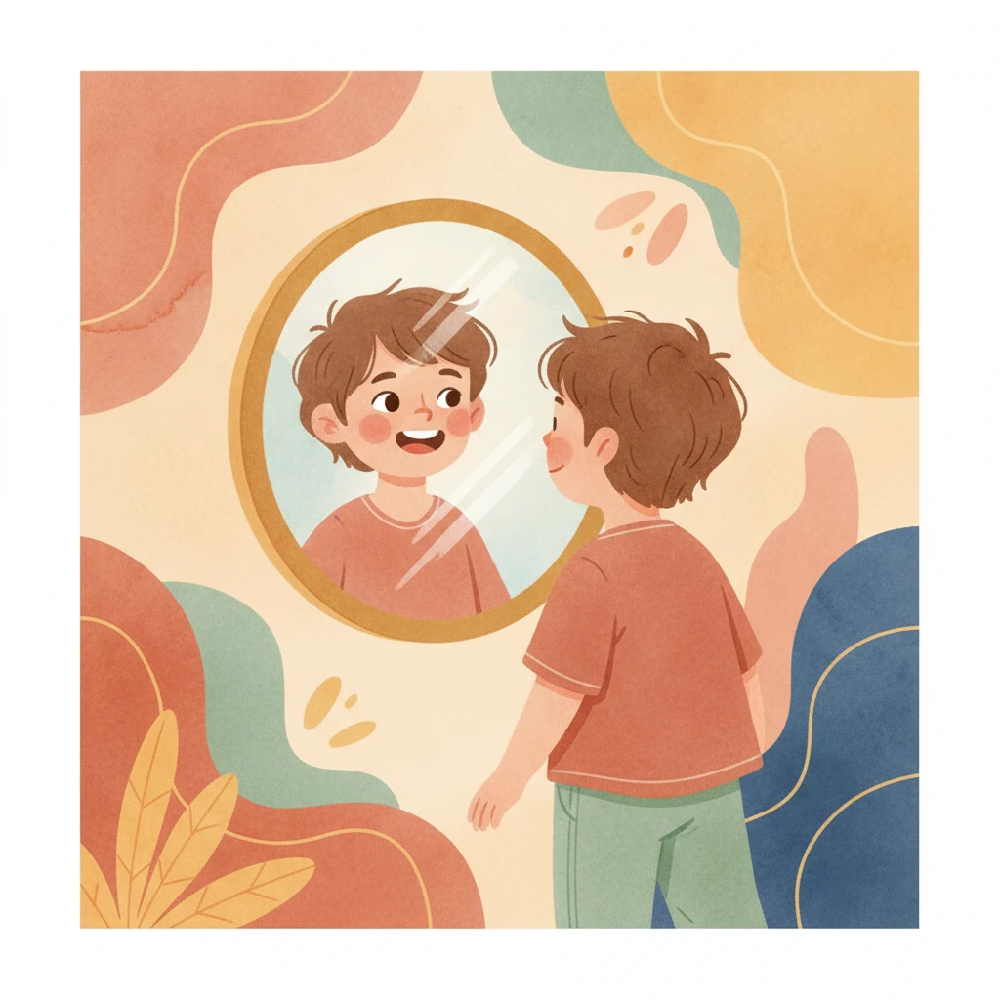
◎Ce que je vais apprendre
Comprendre ce qu'est une estime de soi saine, ni trop haute ni trop basse.
Découvrir un hadith sur le croyant fort et le croyant faible.
Apprendre une phrase à se répéter après un échec.
✎L'histoire d'Ahmed
Ahmed a raté son évaluation de mathématiques et se dit intérieurement : « Je suis nul, je n'y arriverai jamais. » Son grand frère, en le voyant abattu, lui dit : « Ahmed, une mauvaise note ne dit pas qui tu es — elle dit juste que cette fois, il faut retravailler ce point précis. Une estime de soi saine, ce n'est pas se croire meilleur que tout le monde, ni se croire nul : c'est reconnaître calmement ses points forts et ses points à améliorer, sans exagérer dans un sens ou dans l'autre. »
🤲Ce que dit le Prophète ﷺ
« Le croyant fort est meilleur et plus aimé d'Allah que le croyant faible, bien qu'il y ait du bien en chacun d'eux. Recherche ce qui te profite, demande le secours d'Allah, et ne te laisse pas abattre. Si quelque chose t'atteint, ne dis pas : "Si j'avais fait ceci, cela serait arrivé" ; mais dis plutôt : "Allah l'a décrété, et Il fait ce qu'Il veut" — car "si" ouvre la porte à l'action de Satan. »
Ce hadith enseigne que la « force » du croyant n'est pas physique : c'est une force intérieure faite de persévérance, de demande d'aide à Allah, et de refus de se laisser abattre par un échec. Il donne aussi un conseil très concret contre les regrets : plutôt que de ressasser « si j'avais fait autrement », il vaut mieux accepter ce qui est arrivé et avancer — les regrets sans fin n'aident jamais à progresser.
✦Et toi ?
Après un échec, essaie de dire (à voix haute ou dans ta tête) : « Cela n'a pas marché cette fois, mais je peux retravailler ce point » — plutôt que « je suis nul(le) ».
✏Je m'exerce
1. Qu'est-ce qu'une estime de soi saine ?
Réponse : Reconnaître calmement ses points forts et ses points à améliorer, sans exagérer dans un sens ni dans l'autre.
2. D'après le hadith, en quoi consiste la « force » du croyant ?
Réponse : En persévérance et en demande d'aide à Allah, pas en force physique.
3. Que faut-il éviter de dire après un échec, selon le hadith ?
Réponse : « Si j'avais fait ceci... » — car cela ouvre la porte aux regrets sans fin.
★À retenir
« Une mauvaise note ne dit pas qui je suis — je reconnais mes points forts et ceux à améliorer, sans me juger sévèrement. »
✎Vocabulaire
Estime de soi : la façon dont je me perçois moi-même.
🏠 Ancrage quotidien — à la maison
La prochaine fois qu'un membre de ta famille rate quelque chose (un plat raté, une erreur), encourage-le avec une phrase positive plutôt que de te moquer — entraîne-toi à donner à un autre ce que tu voudrais recevoir.
Semaine 16 · Coran📗 Le Coran
« Lis ! » — la première Révélationالْعَلَق
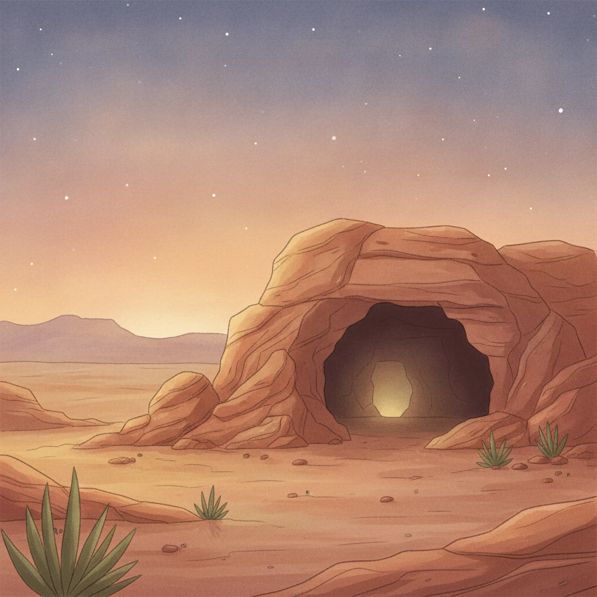
◎Ce que je vais apprendre
Découvrir la sourate Al-'Alaq (« L'Adhérence »), 19 versets, la première révélée au Prophète ﷺ.
Comprendre pourquoi le savoir et la lecture sont si valorisés en Islam.
Situer cette sourate au tout début de la prophétie, à la grotte de Hirâ'.
« Lis, au nom de ton Seigneur qui a créé, qui a créé l'homme d'une adhérence. Lis ! Ton Seigneur est le Très Noble, qui a enseigné par la plume [le calame], a enseigné à l'homme ce qu'il ne savait pas. Prenez-garde ! Vraiment l'homme devient rebelle, dès qu'il estime qu'il peut se suffire à lui-même (à cause de sa richesse). Mais, c'est vers ton Seigneur qu'est le retour. As-tu vu celui qui interdit à un serviteur d'Allah (Mohammed) de célébrer la prière (As-Salât) ? Vois-tu s'il est sur la bonne voie, ou s'il ordonne la piété ? Vois-tu s'il dément et tourne le dos ? Ne sait-il pas que vraiment Allah voit ? Mais non ! S'il ne cesse pas, Nous le saisirons certes, par le toupet, le toupet d'un menteur, d'un pécheur. Qu'il appelle donc son assemblée. Nous appellerons les gardiens (de l'Enfer). Non ! Ne lui obéis pas ; mais prosterne-toi et rapproche-toi. »
Sourate Al-'Alaq (96), versets 1 à 19 — trad. M. Hamidullah
Les cinq premiers versets de cette sourate sont les tout premiers mots du Coran révélés au Prophète ﷺ, dans la grotte de Hirâ', par l'ange Jibrîl. Allah y rappelle qu'Il a créé l'être humain, et qu'Il lui a enseigné par la plume ce qu'il ne savait pas — le savoir est donc, dès le premier message coranique, présenté comme un don immense d'Allah.
La suite de la sourate met en garde contre la « rébellion » qui naît souvent de la richesse ou du sentiment de suffisance (« je n'ai besoin de personne »), et évoque celui qui a tenté d'empêcher le Prophète ﷺ de prier — un rappel qu'Allah voit tout, même ce que l'on croit caché.
✦3 idées essentielles
1
Le tout premier message du Coran commence par « Lis » — le savoir et l'apprentissage sont valorisés dès le début de la Révélation.
2
Se sentir « suffisant » ou supérieur à cause de ce qu'on possède peut mener à la rébellion contre ce qui est juste — une leçon d'humilité.
3
Allah voit tout ce que je fais, même quand je pense être seul(e) et que personne ne regarde.
✏Je m'exerce
1. Où et par qui la première révélation a-t-elle été apportée au Prophète ﷺ ?
Réponse : À la grotte de Hirâ', par l'ange Jibrîl.
2. Par quoi Allah a-t-Il enseigné à l'homme ce qu'il ne savait pas ?
Réponse : Par la plume (al-qalam).
3. Que provoque souvent le sentiment de « se suffire à soi-même » ?
Réponse : La rébellion (at-tughyân), selon la sourate.
★À retenir
« Le premier mot du Coran est "Lis" — apprendre est un acte de foi, pas seulement un devoir scolaire. »
✎Vocabulaire
Hirâ' : la grotte de la première Révélation.حِرَاء
Qalam : la plume, le calame.قَلَم
Tughyân : la rébellion, l'excès.طُغْيَان
🏫 Ancrage quotidien — avec les enseignants
Cette semaine, pose au moins une vraie question à un enseignant sur un sujet que tu ne comprends pas encore, sans avoir honte de ne pas savoir — comme le rappelle le premier mot du Coran, « Lis ».
Semaine 17 · Aqîda🕌 Croyance
Le Jour Dernier (2) — le Paradisالْجَنَّة
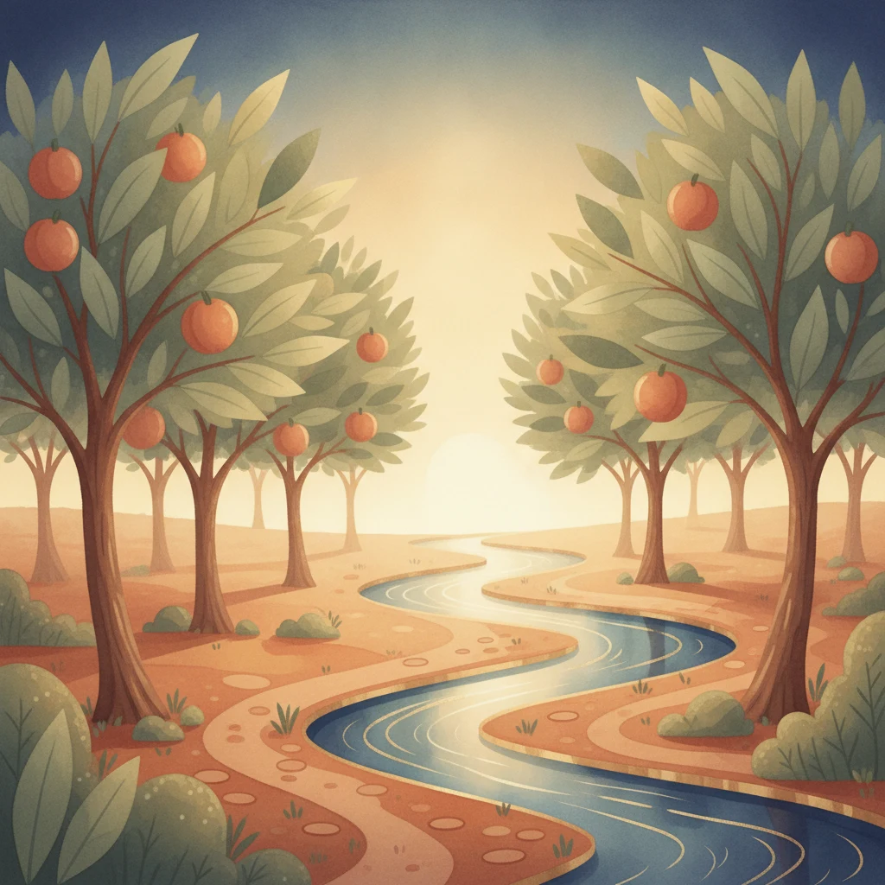
◎Ce que je vais apprendre
Poursuivre la découverte du Jour Dernier en parlant du Paradis (Jannah).
Comprendre que le Paradis dépasse tout ce qu'on peut imaginer.
Garder un ton serein et motivant, sans peur, sur ce sujet.
✎L'histoire d'Ahmed
Après la leçon de la semaine 12, Ahmed demande à sa mère : « Mais alors, à quoi ça ressemble, le Paradis ? » Sa mère sourit : « C'est une question que beaucoup de gens se posent. La vérité, c'est qu'aucun humain ne peut vraiment se l'imaginer, parce que c'est bien plus beau que tout ce qu'on connaît sur terre. Allah nous dit simplement qu'Il l'a préparé pour Ses serviteurs sincères, comme une immense joie qui dépasse notre imagination. »
🤲Ce que dit le Prophète ﷺ
Allah, Exalté soit-Il, a dit : « J'ai préparé pour Mes serviteurs vertueux ce qu'aucun œil n'a vu, ce qu'aucune oreille n'a entendu, et ce qu'aucun cœur d'homme n'a imaginé. »
« Aucun être ne sait ce qu'on a réservé pour eux comme réjouissance pour les yeux, en récompense de ce qu'ils œuvraient ! »
Sourate As-Sajda (32), verset 17 — trad. M. Hamidullah
💬Qu'est-ce que cela veut dire ?
D'après le tafsîr d'As-Sa'dî, ce verset annonce une récompense cachée, réservée à ceux qui ont bien agi en secret (prières de nuit, invocations discrètes) : de la même façon qu'ils ont caché leurs bonnes actions, Allah leur cache une joie extraordinaire dont l'ampleur dépasse toute imagination humaine. Ce Paradis n'est donc pas un lieu à décrire avec des mots trop précis : c'est une promesse de joie sans limite pour ceux qui auront cru et bien agi.
✏Je m'exerce
1. D'après le hadith, qu'est-ce qu'aucun œil n'a jamais vu ?
Réponse : Ce qu'Allah a préparé pour Ses serviteurs vertueux au Paradis.
2. Pourquoi ne peut-on pas décrire précisément le Paradis ?
Réponse : Parce qu'il dépasse tout ce qu'un être humain peut imaginer.
3. Comment doit-on parler du Paradis : avec peur ou avec espoir ?
Réponse : Avec espoir et sérénité.
★À retenir
« Le Paradis dépasse tout ce que je peux imaginer — c'est une promesse de joie qui donne envie de bien agir. »
✎Vocabulaire
Jannah : le Paradis.جَنَّة
🏠 Ancrage quotidien — à la maison
Fais une bonne action discrète à la maison cette semaine sans la raconter à personne — comme un petit entraînement à la sincérité évoquée dans cette leçon.
Semaine 18 · Fiqh💧 La pratique
Ce qui casse (ou ne casse pas) le jeûneمُفْطِرَات
◎Ce que je vais apprendre
Connaître les repères simples de ce qui casse le jeûne (manger, boire volontairement).
Comprendre que l'oubli ne casse pas le jeûne.
Savoir quoi faire en cas de doute ou d'oubli.
✎L'histoire d'Ahmed
Un jour de Ramadân, Ahmed, distrait par une conversation, boit une gorgée d'eau sans y penser. Pris de panique, il pense que son jeûne est cassé et va tout arrêter. Sa mère le rassure aussitôt : « Non, Ahmed, si tu as bu ou mangé par pur oubli, sans le faire exprès, ton jeûne reste valable — continue simplement comme si de rien n'était, dès que tu t'en rends compte. Allah, dans Sa miséricorde, ne punit pas ce qui est involontaire. »
💬Quelques repères simples
Casse le jeûne (de façon volontaire) : manger ou boire volontairement, du lever de l'aube au coucher du soleil. Ne casse PAS le jeûne : manger ou boire par pur oubli (on continue simplement le jeûne dès qu'on s'en rend compte) ; se brosser les dents ou se rincer la bouche avec précaution ; une prise de sang ou une piqûre médicale non nutritive (selon l'avis le plus répandu) ; le fait de goûter très légèrement un plat sans avaler, pour une personne qui cuisine, si c'est nécessaire.
En cas de doute sérieux, il vaut toujours mieux demander à un parent ou à un enseignant plutôt que de deviner seul(e) — le fiqh du jeûne s'apprend avec l'aide d'adultes de confiance.
✦Le savais-tu ?
Un jeûne cassé par oubli n'a même pas besoin d'être rattrapé plus tard : il compte comme valide pour la journée, à la différence d'un jeûne rompu volontairement.
✏Je m'exerce
1. Que faut-il faire si on mange par pur oubli pendant le jeûne ?
Réponse : Continuer simplement le jeûne dès qu'on s'en rend compte — il reste valable.
2. Que casse le jeûne, de façon générale ?
Réponse : Manger ou boire volontairement pendant les heures de jeûne.
3. Que faire en cas de doute sérieux sur le jeûne ?
Réponse : Demander à un parent ou un adulte de confiance plutôt que de deviner seul.
★À retenir
« Un oubli ne casse pas mon jeûne — Allah ne punit pas ce qui est involontaire. »
✎Vocabulaire
Muftirât : ce qui casse le jeûne.مُفْطِرَات
🚌 Ancrage quotidien — rue & transports
Si tu oublies quelque chose par accident (une consigne, un objet), ne panique pas et ne te juge pas sévèrement — corrige calmement, comme pour un oubli pendant le jeûne.
Semaine 19 · Sîra🕋 L'histoire du Prophète ﷺ
Le Khandaq — la ruse au service de la défenseالْخَنْدَق
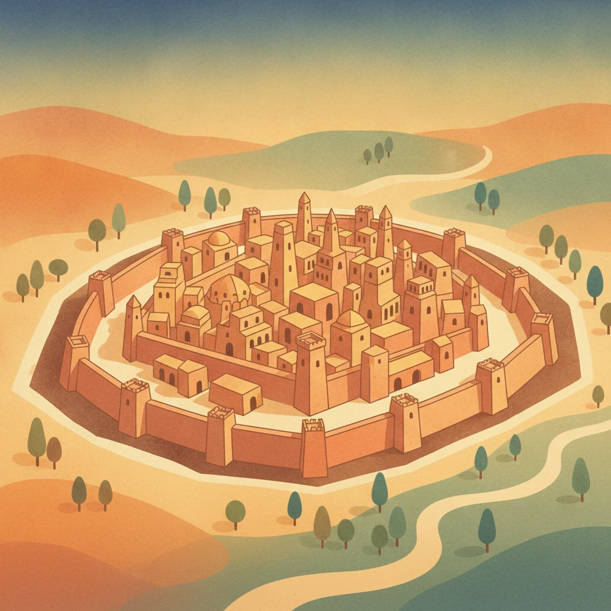
◎Ce que je vais apprendre
Découvrir la bataille du Khandaq (« la Tranchée »), en l'an 5 de l'Hégire.
Comprendre l'idée proposée par Salmân al-Fârisî.
Retenir que l'intelligence stratégique fait partie de la foi bien vécue.
✎Le récit
En l'an 5 de l'Hégire, une coalition de plusieurs tribus, alliées contre les musulmans, s'apprête à assiéger Médine avec une armée considérable. Face à cette menace, un compagnon d'origine perse, Salmân al-Fârisî, propose une stratégie inconnue jusque-là des Arabes : creuser une large tranchée (khandaq) autour des zones vulnérables de la ville, empêchant ainsi la cavalerie ennemie de charger directement.
Le Prophète ﷺ adopte cette idée et participe lui-même, avec ses compagnons, au creusement de la tranchée, malgré le froid et la faim. Grâce à cet obstacle inattendu, l'armée coalisée, incapable de franchir la tranchée, finit par se retirer sans grande bataille frontale, après un siège long et éprouvant.
✦3 idées essentielles
1
Le Prophète ﷺ a accepté une idée venue d'un compagnon (Salmân), montrant que l'intelligence pratique compte, d'où qu'elle vienne.
2
La défense peut être plus sage que l'affrontement direct : creuser plutôt que foncer tête baissée.
3
Le Prophète ﷺ a participé lui-même au travail difficile, aux côtés de ses compagnons, sans se considérer au-dessus de la tâche.
✏Je m'exerce
1. Qui a proposé l'idée de creuser une tranchée ?
Réponse : Salmân al-Fârisî.
2. Pourquoi la tranchée a-t-elle été efficace ?
Réponse : Elle empêchait la cavalerie ennemie de charger directement sur la ville.
3. Qu'est-ce que cette bataille enseigne sur les bonnes idées ?
Réponse : Une bonne idée mérite d'être écoutée, peu importe qui la propose.
★À retenir
« Une bonne idée mérite d'être écoutée, peu importe d'où elle vient. »
✎Vocabulaire
Khandaq : la tranchée.خَنْدَق
🏫 Ancrage quotidien — cour d'école
Si un camarade propose une idée pour un jeu ou un projet de groupe, écoute-la vraiment avant de la rejeter — même si elle vient de quelqu'un qu'on écoute rarement.
Semaine 20 · Adab🤝 Bienséance
Mes écrans, mon temps libreوَقْتِي
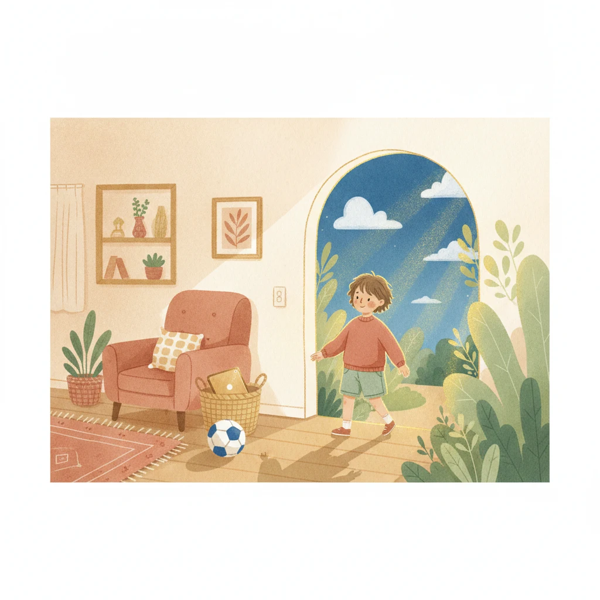
◎Ce que je vais apprendre
Approfondir mes repères sur les écrans et le temps libre, déjà vus en Cycle 2.
Découvrir un hadith sur deux bienfaits que beaucoup de gens gaspillent.
Apprendre à repérer si mon temps d'écran m'aide vraiment ou non.
✎L'histoire d'Ahmed
Ahmed réalise qu'un dimanche entier vient de passer sans qu'il ait presque bougé de son écran, alors qu'il avait prévu d'aller jouer dehors avec ses cousins et de lire un peu. Le soir, il se sent étrangement fatigué et un peu vide, alors qu'il n'a rien « fait » de fatigant. Sa mère lui explique : « Le temps libre est un cadeau, Ahmed, pas seulement un vide à combler avec n'importe quoi. »
« Il y a deux bienfaits dont beaucoup de gens sont perdants : la santé, et le temps libre. »
Ibn 'Abbâs — Riyad as-Salihin, n°1314 (rapporté par Al-Bukhârî) — source
💬Qu'est-ce que cela veut dire ?
Ce hadith enseigne que le temps libre est un vrai bienfait d'Allah — mais un bienfait qu'on gaspille souvent sans même s'en rendre compte, en le remplissant de la première distraction venue plutôt que d'un choix réfléchi. Ce n'est pas interdit de se détendre devant un écran : le problème apparaît quand ce temps devient automatique, sans limite, et qu'il remplace le sport, les amis, la lecture, ou le repos réel.
Un bon repère simple : demande-toi, après un moment d'écran, si tu te sens plutôt reposé(e) et satisfait(e), ou plutôt vide et fatigué(e) — cette sensation en dit souvent long.
✏Je m'exerce
1. Quels sont les deux bienfaits cités dans le hadith ?
Réponse : La santé et le temps libre.
2. Pourquoi beaucoup de gens sont-ils "perdants" avec ces deux bienfaits ?
Réponse : Parce qu'ils les gaspillent sans réfléchir, au lieu de les utiliser à bon escient.
3. Comment savoir si un moment d'écran m'a fait du bien ?
Réponse : En observant si je me sens reposé(e) et satisfait(e), ou plutôt vide et fatigué(e) après.
★À retenir
« Mon temps libre est un cadeau d'Allah — je choisis comment le remplir, au lieu de le laisser filer. »
✎Vocabulaire
Faragh : le temps libre.فَرَاغ
Maghbûn : celui qui est perdant, dupé.مَغْبُون
🏠 Ancrage quotidien — à la maison
Cette semaine, choisis un moment précis à l'avance pour tes écrans (au lieu de les allumer par automatisme), et remplace un moment libre par une activité choisie : lecture, jeu dehors, aide à la maison.
Semaine 21 · Coran📗 Le Coran
La Preuve évidenteالْبَيِّنَة
◎Ce que je vais apprendre
Découvrir la sourate Al-Bayyina (« La Preuve évidente »), 8 versets — dernière sourate de l'année.
Comprendre ce que veut dire adorer Allah « avec sincérité » (hunafâ').
« Les infidèles parmi les gens du Livre, ainsi que les Associateurs, ne cesseront pas de mécroire jusqu'à ce que leur vienne la Preuve évidente : un Messager, de la part d'Allah, qui leur récite des feuilles purifiées, dans lesquelles se trouvent des prescriptions d'une rectitude parfaite. Et ceux à qui le Livre a été donné ne se sont divisés qu'après que la preuve leur fut venue. Il ne leur a été commandé, cependant, que d'adorer Allah, Lui vouant un culte exclusif, d'accomplir la prière (As-Salât) et d'acquitter l'aumône (Az-Zakât). Et voilà la religion de droiture. Les infidèles parmi les gens du Livre, ainsi que les Associateurs iront au feu de l'Enfer, pour y demeurer éternellement. De toute la création, ce sont eux les pires. Quant à ceux qui croient et accomplissent les bonnes œuvres, ce sont les meilleurs de toute la création. Leur récompense auprès d'Allah sera les Jardins de séjour, sous lesquels coulent les ruisseaux, pour y demeurer éternellement. Allah les agrée et ils L'agréent. Telle sera [la récompense] de celui qui craint son Seigneur. »
Sourate Al-Bayyina (98), versets 1 à 8 — trad. M. Hamidullah
Cette sourate rappelle que le Messager d'Allah ﷺ est venu comme une « Preuve évidente », récitant des versets d'une clarté et d'une rectitude parfaites. Elle résume ensuite en une phrase simple tout ce qu'Allah demande vraiment : L'adorer avec sincérité totale (mukhlisîna lahu ad-dîn), accomplir la prière, et donner l'aumône. C'est « la religion de droiture » (dîn al-qayyima) — rien de compliqué à ajouter.
La sourate se termine en distinguant deux issues : ceux qui ont refusé la vérité connaîtront un châtiment éternel, tandis que ceux qui ont cru et bien agi obtiendront la satisfaction mutuelle avec Allah — « Allah les agrée et ils L'agréent » — et des jardins éternels.
✦3 idées essentielles
1
Ce qu'Allah demande vraiment tient en une phrase simple : L'adorer sincèrement, prier, et donner l'aumône — pas besoin de compliquer sa religion.
2
Le mot « hunafâ' » (sincères) rappelle que l'adoration doit venir du cœur, pas seulement des gestes extérieurs.
3
« Allah les agrée et ils L'agréent » : le vrai bonheur, c'est une relation à double sens avec Allah, pas seulement une obéissance à sens unique.
✏Je m'exerce
1. Quelles sont les 3 choses qu'Allah demande, d'après le verset 5 ?
Réponse : L'adorer sincèrement, accomplir la prière, donner l'aumône.
2. Comment appelle-t-on cette religion dans la sourate ?
Réponse : « Dîn al-qayyima », la religion de droiture.
3. Que veut dire « Allah les agrée et ils L'agréent » ?
Réponse : Une satisfaction mutuelle entre Allah et Ses serviteurs sincères.
★À retenir
« Ma religion, au fond, tient en une phrase : adorer Allah sincèrement, prier, et donner. »
✎Vocabulaire
Al-Bayyina : la Preuve évidente.الْبَيِّنَة
Hunafâ' : ceux qui sont sincèrement tournés vers Allah.حُنَفَاء
🏠 Ancrage quotidien — à la maison
Avant ta prochaine prière, prends une seconde pour te rappeler que tu la fais sincèrement pour Allah, pas par habitude mécanique — comme le rappelle cette sourate.
Semaine 22 · Aqîda🕌 Croyance
Le Qadar, sans fatalismeالْقَدَر
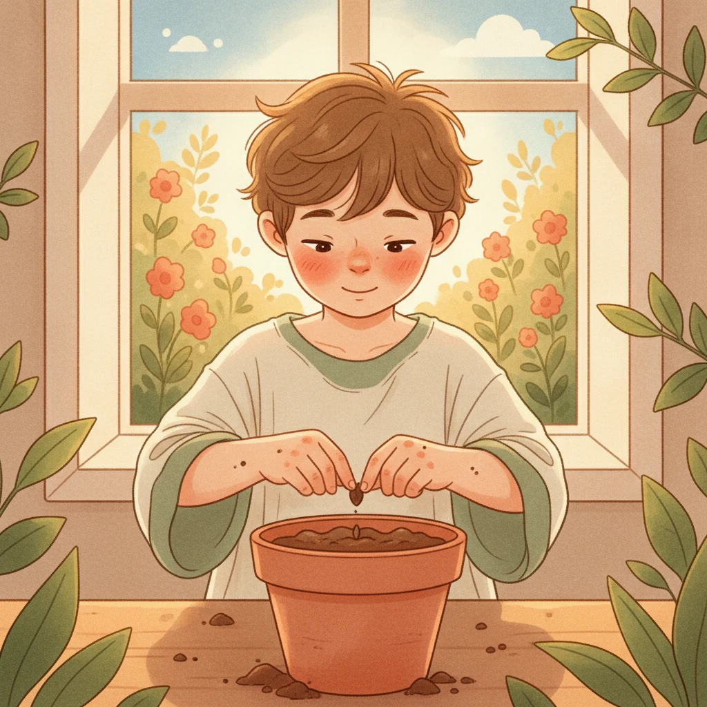
◎Ce que je vais apprendre
Découvrir le Qadar, dernier des 6 piliers de la foi.
Comprendre que croire au Qadar n'empêche jamais d'agir et de se donner les moyens.
Éviter le fatalisme (« à quoi bon essayer »).
✎L'histoire d'Ahmed
Avant un match important, un camarade dit à Ahmed : « De toute façon, si on doit gagner, on gagnera, pas la peine de s'entraîner plus. » Ahmed n'est pas convaincu et en parle à son professeur d'éducation islamique. Celui-ci lui explique : « C'est une mauvaise compréhension du Qadar, Ahmed. Croire que tout est déjà su et écrit par Allah ne veut pas dire qu'il ne faut rien faire — au contraire, s'entraîner sérieusement fait aussi partie de ce qu'Allah a prévu pour toi. Le Qadar n'annule jamais l'effort : il l'accompagne. »
❝Ce que dit le Coran
إِنَّا كُلَّ شَيْءٍ خَلَقْنَاهُ بِقَدَرٍ
Innâ kulla shay'in khalaqnâhu biqadar.
« Nous avons créé toute chose avec mesure. »
Sourate Al-Qamar (54), verset 49 — trad. M. Hamidullah
🤲Le hadith de Jibrîl (rappel du Cycle 1, sur le Qadar)
Interrogé sur l'Îmân (la foi), le Prophète ﷺ répondit : « C'est croire en Allah, en Ses anges, en Ses livres, en Ses messagers, au Jour Dernier, et croire au Qadar, en son bien comme en son mal. »
'Umar ibn al-Khattâb — Riyad as-Salihin, n°1277 (rapporté par Muslim) — source
💬Qu'est-ce que cela veut dire ?
D'après le tafsîr d'As-Sa'dî, le verset 54:49 signifie qu'absolument tout ce qui existe a été créé par Allah selon une mesure précise, connue et voulue par Lui de toute éternité — rien n'arrive par pur hasard. Le Qadar, dernier des 6 piliers de la foi cités dans le hadith de Jibrîl, consiste à croire que tout ce qui se produit, en bien comme en mal, s'inscrit dans ce que le savoir d'Allah a prévu.
Mais cette croyance ne doit jamais devenir une excuse pour ne rien faire (« à quoi bon réviser, ce qui doit arriver arrivera »). Au contraire : puisqu'on ne connaît jamais à l'avance ce qu'Allah a décrété, on agit sérieusement de son côté, tout en acceptant avec sérénité ce qui finit par se produire, comme on l'a vu avec le hadith du croyant fort en S15 (« dis : Allah l'a décrété, et Il fait ce qu'Il veut »).
✏Je m'exerce
1. Que veut dire croire au Qadar ?
Réponse : Croire que tout ce qui existe et se produit, en bien comme en mal, s'inscrit dans ce qu'Allah a prévu et mesuré.
2. Le Qadar dispense-t-il de faire des efforts ?
Réponse : Non, au contraire — l'effort personnel fait aussi partie de ce qu'Allah a prévu.
3. Combien de piliers de la foi (Îmân) le hadith de Jibrîl mentionne-t-il ?
Réponse : 6 : Allah, Ses anges, Ses livres, Ses messagers, le Jour Dernier, le Qadar.
★À retenir
« Le Qadar n'annule jamais mon effort — il l'accompagne. Je fais de mon mieux, et j'accepte sereinement le résultat. »
✎Vocabulaire
Qadar : la prédestination, la mesure fixée par Allah.قَدَر
Fatalisme : croire qu'il est inutile d'agir puisque « tout est déjà écrit ».
🚌 Ancrage quotidien — rue & transports
Si un trajet ou un projet ne se passe pas comme prévu (retard, imprévu), entraîne-toi à dire calmement « qadara Allah » plutôt que de t'énerver — tout en continuant d'agir au mieux ensuite.
Semaine 23 · Fiqh💧 La pratique
La propreté rituelle, avec tactالطَّهَارَة
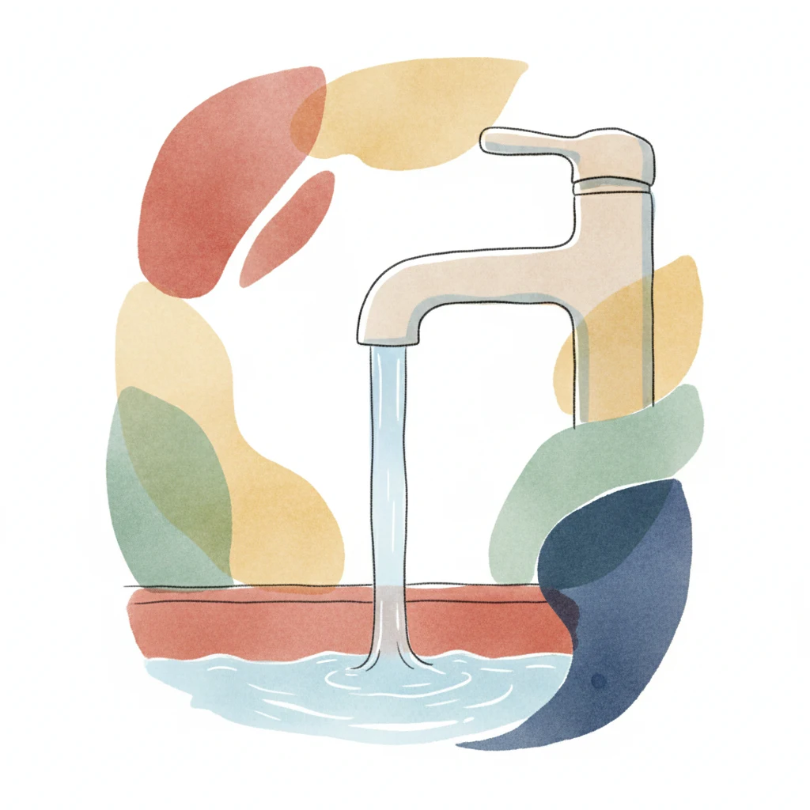
◎Ce que je vais apprendre
Comprendre pourquoi la propreté rituelle (tahâra) est appelée « la moitié de la foi ».
Aborder ce sujet avec pudeur et simplicité, adapté à mon âge.
Savoir vers qui me tourner pour mes questions précises et personnelles.
💬Qu'est-ce que la Tahâra ?
La Tahâra (propreté rituelle) est une condition nécessaire avant la prière : elle comprend les petites ablutions (wudû') que tu connais déjà depuis le Cycle 1, mais aussi, à cet âge, un besoin grandissant de propreté personnelle et d'hygiène quotidienne (se laver régulièrement, changer de vêtements). L'Islam attache une grande importance à cette propreté, à la fois physique et intérieure — un cœur sincère et un corps propre vont ensemble.
En grandissant, ton corps change et certaines questions plus personnelles peuvent se poser sur la propreté rituelle. C'est tout à fait normal, et il ne faut jamais avoir honte d'en parler avec un parent, un enseignant de confiance, ou une personne de ta famille du même sexe que toi : ce sont des questions de fiqh classiques, pas des sujets gênants.
Si tu as une question précise sur ton corps ou la propreté rituelle que tu n'oses pas poser à voix haute en classe, garde-la pour un moment en privé avec un adulte de confiance — il n'y a aucune honte à poser ce genre de question.
✏Je m'exerce
1. Que veut dire « la purification est la moitié de la foi » ?
Réponse : Que la propreté (physique et intérieure) occupe une place essentielle dans la pratique de la foi.
2. Vers qui se tourner pour une question personnelle sur la propreté rituelle ?
Réponse : Un parent, un enseignant de confiance, ou un adulte de la famille du même sexe.
3. Est-ce qu'il faut avoir honte de poser ce type de question ?
Réponse : Non, ce sont des questions de fiqh normales.
★À retenir
« La propreté, physique et intérieure, fait partie de ma foi — je peux en parler sans honte à un adulte de confiance. »
✎Vocabulaire
Tahâra : la propreté rituelle.طَهَارَة
Wudû' : les petites ablutions.وُضُوء
🏠 Ancrage quotidien — à la maison
Prends l'habitude cette semaine de vérifier ta propreté personnelle avant chaque prière sans qu'on ait à te le rappeler (mains, tenue, lieu de prière).
Semaine 24 · Sîra🕋 L'histoire du Prophète ﷺ
Hudaybiyya — la patience stratégiqueالْحُدَيْبِيَة
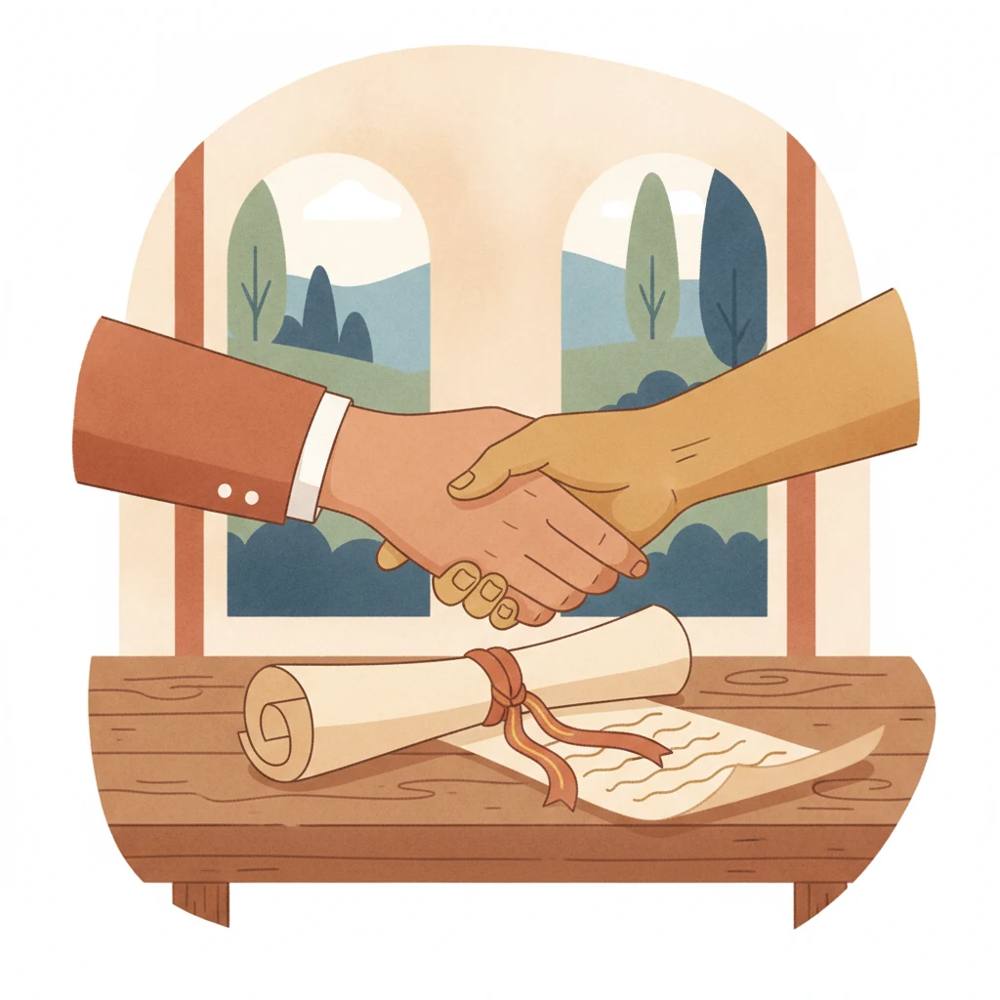
◎Ce que je vais apprendre
Découvrir le traité de Hudaybiyya, en l'an 6 de l'Hégire.
Comprendre pourquoi le Prophète ﷺ a accepté des conditions apparemment défavorables.
Retenir la leçon de la patience stratégique.
✎Le récit
En l'an 6 de l'Hégire, le Prophète ﷺ part avec environ 1400 compagnons vers La Mecque, non pas pour se battre, mais pour accomplir la 'Umra (le petit pèlerinage). Les Mecquois, méfiants, leur bloquent la route près du lieu appelé Hudaybiyya. Après des négociations, un traité de paix est signé — mais avec des conditions qui semblent, à première vue, très défavorables aux musulmans : ils doivent repartir sans accomplir la 'Umra cette année-là, et toute personne quittant La Mecque pour rejoindre les musulmans sans l'accord de son tuteur devra être renvoyée, sans réciprocité inverse.
Plusieurs compagnons, dont 'Umar ibn al-Khattâb, expriment leur incompréhension face à des conditions si dures. Le Prophète ﷺ accepte pourtant calmement le traité, avec confiance et patience. L'histoire donnera raison à ce choix : les deux années de paix qui suivent permettent aux musulmans de se renforcer, de nouer des contacts avec d'autres tribus, et de préparer la conquête pacifique de La Mecque, deux ans plus tard.
✦3 idées essentielles
1
Accepter un accord qui semble défavorable sur le moment peut, avec patience, ouvrir la voie à un bien bien plus grand.
2
Le Prophète ﷺ a choisi la paix plutôt que l'affrontement, même quand certains compagnons ne comprenaient pas ce choix.
3
La patience stratégique n'est pas de la faiblesse : c'est parfois la décision la plus sage à long terme.
✏Je m'exerce
1. Pourquoi le Prophète ﷺ se rendait-il à La Mecque en l'an 6 ?
Réponse : Pour accomplir la 'Umra, pas pour se battre.
2. Comment les compagnons ont-ils réagi aux conditions du traité ?
Réponse : Certains, comme 'Umar, ont exprimé leur incompréhension face à des conditions qui semblaient défavorables.
3. Qu'a permis ce traité, avec le recul ?
Réponse : Deux années de paix qui ont renforcé les musulmans avant la conquête pacifique de La Mecque.
★À retenir
« Un accord qui semble difficile sur le moment peut, avec patience, mener à un bien plus grand. »
✎Vocabulaire
Hudaybiyya : lieu du traité de paix.الْحُدَيْبِيَة
'Umra : le petit pèlerinage.عُمْرَة
🏫 Ancrage quotidien — avec les enseignants
Si une décision d'un enseignant te semble injuste sur le moment (un exercice supplémentaire, une règle stricte), essaie d'abord la patience avant de protester — comme à Hudaybiyya, le résultat final peut être positif.
Semaine 25 · Adab — Clôture de l'année🤝 Bienséance
Mon carnet des 4 lieuxدَفْتَرِي
◎Ce que je vais apprendre
Faire le bilan de mon année avec Ahmed : ce que j'ai appris et vécu dans les 4 contextes.
Relire les grandes idées de l'année en un seul chapitre de clôture.
Me préparer à continuer à grandir l'année prochaine.
✎L'histoire d'Ahmed
À la fin de l'année, Ahmed relit son carnet des 4 lieux, rempli semaine après semaine : une aide à sa petite sœur, une place cédée dans le bus, un camarade inclus dans un jeu, une question posée sans honte à un enseignant. Il se rend compte qu'aucune de ces actions n'était spectaculaire — mais qu'ensemble, elles ont changé sa façon d'être, un peu plus posée, un peu plus attentive aux autres qu'au début de l'année.
« C'est exactement le but, lui dit son enseignant. La foi ne se mesure pas à un seul grand geste, mais à la régularité de petits gestes sincères, répétés dans chaque endroit de ta vie. »
✦Ce que j'ai découvert cette année, en résumé
1
Coran : 5 nouvelles sourates (Al-Balad, Ash-Shams, Al-Layl, Al-'Alaq, Al-Bayyina), chacune reliée à des idées de foi concrètes.
2
Aqîda : Ar-Rabb (Rubûbiyya), l'adoration exclusive d'Allah (Ulûhiyya), le Jour Dernier, et le Qadar sans fatalisme.
3
Fiqh : prier en groupe, suivre l'imam, jeûner le Ramadân complet avec sincérité, la propreté rituelle.
4
Sîra : Badr (préparation et confiance), Uhud (discipline), le Khandaq (intelligence stratégique), Hudaybiyya (patience stratégique).
5
Adab : mon identité, résister à la pression du groupe, une estime de soi saine, mes écrans et mon temps libre — toujours reliés aux 4 lieux de ma vie.
✏Mon bilan personnel
1. Quelle leçon de l'année t'a le plus marqué(e) ? Pourquoi ?
Réponse libre : il n'y a pas de bonne ou de mauvaise réponse — l'important est de réfléchir sincèrement.
2. Dans lequel des 4 lieux (maison, rue/transports, cour d'école, enseignants) as-tu le plus progressé ?
Réponse libre.
3. Quelle sourate de cette année voudrais-tu réciter à quelqu'un de ta famille ?
Réponse libre.
★À retenir — pour toute l'année
« Ma foi grandit à travers de petits gestes sincères, répétés à la maison, dans la rue, dans la cour, et en classe. »
🧭 Ancrage quotidien — les 4 lieux, ensemble
Cette dernière semaine, choisis un geste dans chacun des 4 lieux (maison, rue/transports, cour d'école, avec un enseignant) et note-les dans ton carnet des 4 lieux — un vrai bilan complet avant de continuer à grandir l'année prochaine.
🎓 Grand Quiz de fin d'année
Réponds à toutes les questions pour vérifier ce que tu as appris cette année ! À la fin, génère ton récapitulatif pour le montrer à ton enseignant(e).
Détectée automatiquement, modifiable
Score : 0 / 15
Vrai ou faux
1. Les cinq premiers versets révélés au Prophète ﷺ lui ont été apportés par l'ange Jibrîl, dans la grotte de Hirâ'.
Vrai ou faux
2. Si on mange ou boit par pur oubli pendant le jeûne, le jeûne est cassé.
Vrai ou faux
3. Croire au Qadar veut dire qu'il est inutile de faire des efforts, puisque tout est déjà écrit.
Choix unique
4. Environ combien de musulmans étaient présents face aux Mecquois à la bataille de Badr ?
Choix unique
5. Qui a proposé de creuser une tranchée (khandaq) pour défendre Médine ?
Choix unique
6. Qu'a permis le traité de Hudaybiyya, avec le recul ?
Choix unique
7. Dans la prière en groupe, qui dirige les mouvements que tout le monde suit ?
Choix multiple
8. Coche tout ce qui NE casse PAS le jeûne :
Choix multiple
9. Coche toutes les sourates apprises cette année (Cycle 3) :
Mise en situation
Avant un match important, un camarade dit à Ahmed : « De toute façon, si on doit gagner, on gagnera, pas la peine de s'entraîner plus. »
10. Que peut répondre Ahmed, en pensant au Qadar ?
Mise en situation
Un groupe d'élèves se moque régulièrement d'un camarade — surnom humiliant, rires sur son passage, messages moqueurs dans un groupe de discussion. Un jour, les élèves poussent Ahmed à participer aussi, pour « faire comme tout le monde » et ne pas devenir à son tour une cible.
11. Que doit faire Ahmed, témoin de cette situation ?
Relie les éléments
12. Relie chaque terme à sa définition :
Jamâ'a
Khandaq
Hirâ'
Qadar
La grotte de la première Révélation
La prédestination, la mesure fixée par Allah
La prière accomplie en groupe
La tranchée
Touche un mot à gauche, puis son correspondant à droite.
Le récapitulatif (nom, score, date) peut être imprimé ou enregistré en PDF pour ton enseignant(e).